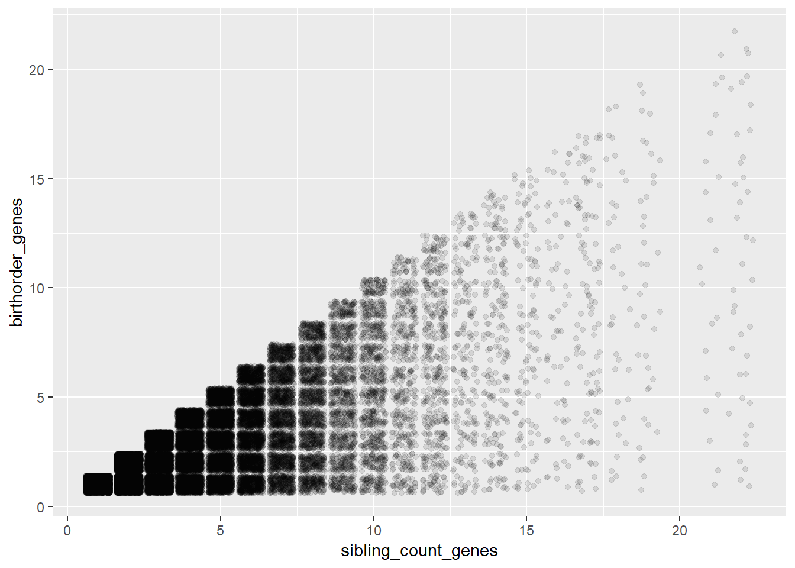

Data Wrangling
Helper
source("0_helpers.R")## Warning: package 'rmarkdown' was built under R version 3.4.3## Warning: package 'knitr' was built under R version 3.4.3##
## Attaching package: 'formr'## The following object is masked from 'package:rmarkdown':
##
## word_document##
## Attaching package: 'lubridate'## The following object is masked from 'package:base':
##
## date## Warning: package 'stringr' was built under R version 3.4.3## Loading required package: carData## lattice theme set by effectsTheme()
## See ?effectsTheme for details.##
## Attaching package: 'data.table'## The following objects are masked from 'package:lubridate':
##
## hour, isoweek, mday, minute, month, quarter, second, wday, week, yday, year## The following objects are masked from 'package:formr':
##
## first, last## Loading required package: Matrix##
## Attaching package: 'lmerTest'## The following object is masked from 'package:lme4':
##
## lmer## The following object is masked from 'package:stats':
##
## step##
## Attaching package: 'cowplot'## The following object is masked from 'package:ggplot2':
##
## ggsave## Warning: package 'haven' was built under R version 3.4.3##
## Attaching package: 'psych'## The following objects are masked from 'package:ggplot2':
##
## %+%, alpha## This is lavaan 0.5-23.1097## lavaan is BETA software! Please report any bugs.##
## Attaching package: 'lavaan'## The following object is masked from 'package:psych':
##
## cor2cov## Loading required package: lattice## Loading required package: survival## Loading required package: Formula##
## Attaching package: 'Hmisc'## The following object is masked from 'package:psych':
##
## describe## The following objects are masked from 'package:base':
##
## format.pval, round.POSIXt, trunc.POSIXt, units## Warning: package 'tidyr' was built under R version 3.4.3##
## Attaching package: 'tidyr'## The following object is masked from 'package:Matrix':
##
## expand##
## Attaching package: 'dplyr'## The following objects are masked from 'package:Hmisc':
##
## combine, src, summarize## The following objects are masked from 'package:data.table':
##
## between, first, last## The following objects are masked from 'package:lubridate':
##
## intersect, setdiff, union## The following objects are masked from 'package:formr':
##
## first, last## The following objects are masked from 'package:stats':
##
## filter, lag## The following objects are masked from 'package:base':
##
## intersect, setdiff, setequal, unionImport data
All data is retrieved from the RAND foundation
### Informations about individuals living in the household in 2014/2015
## All Individuals living in the household
bk_ar1 = read_dta("data/hh14_all_dta/bk_ar1.dta") # Book K, Section ar
# compute father pidlink
bk_ar1 = left_join(bk_ar1, bk_ar1 %>% select(hhid14_9, pid14, pidlink) %>% rename(ar10 = pid14, father_pidlink = pidlink), by = c("hhid14_9", "ar10"))## Warning: Column `ar10` has different attributes on LHS and RHS of join# compute mother pidlink
bk_ar1 = left_join(bk_ar1, bk_ar1 %>% select(hhid14_9, pid14, pidlink) %>% rename(ar11 = pid14, mother_pidlink = pidlink), by = c("hhid14_9", "ar11"))## Warning: Column `ar11` has different attributes on LHS and RHS of join### Informations from IFLS wave 5 to link data to earlier waves:
ptrack = read_dta("data/hh14_all_dta/ptrack.dta") # Tracking informations
### Pregnancy Informations from mother
## Wave 5 - 2014
w5_pregnancy = read_dta("data/hh14_all_dta/b4_ch1.dta") # Book 4, Section ch
## Wave 4 - 2007
w4_pregnancy = read_dta("data/hh07_all_dta/b4_ch1.dta") # Book 4, Section ch
## Wave 3 - 2000
w3_pregnancy = read_dta("data/hh00_all_dta/b4_ch1.dta") # Book 4, Section ch
## Wave 2 - 1997
w2_pregnancy = read_dta("data/hh97dta/b4_ch1.dta") # Book 4, Section ch
## Wave 1 - 1993
w1_pregnancy = read_dta("data/hh93dta/buk4ch1.dta") # Book 4, Section ch
### Marriage information from mother
## Wave 5 - 2014
w5_marriage= read_dta("data/hh14_all_dta/b4_kw3.dta") # Book 4, Section kw3
## Wave 4 - 2007
w4_marriage = read_dta("data/hh07_all_dta/b4_kw2.dta") # Book 4, Section kw2
## Wave 3 - 2000
w3_marriage = read_dta("data/hh00_all_dta/b4_kw3.dta") # Book 4, Section kw3
## Wave 2 - 1997
w2_marriage = read_dta("data/hh97dta/b4_kw2.dta") # Book 4, Section kw2
## Wave 1 - 1993
w1_marriage = read_dta("data/hh93dta/buk4kw2.dta") # Book 4, Section kw2
## Additional marriage information from mother
# Wave 5 - 2014
w5_marriage_additional = read_dta("data/hh14_all_dta/b4_cov.dta") # Book 4, Section cov
# Wave 4 - 2007
w4_marriage_additional = read_dta("data/hh07_all_dta/b4_cov.dta") # Book 4, Section cov
# Wave 3 - 2000
w3_marriage_additional = read_dta("data/hh00_all_dta/b4_cov.dta") # Book 4, Section cov
# Wave 2 - 1997
w2_marriage_additional = read_dta("data/hh97dta/b4_cov.dta") # Book 4, Section cov
# Wave 1 - 1993
w1_marriage_additional = read_dta("data/hh93dta/bukkar2.dta") # Book K, Section ar, household roaster
### IQ Information
ek_ek2 = read_dta("data/hh14_all_dta/ek_ek2.dta") # Book ek2: >15 years
ek_ek1 = read_dta("data/hh14_all_dta/ek_ek1.dta") # Book ek1: <15 years
# additional information (counting backwards, adaptive testing) for adults
b3b_cob = read_dta("data/hh14_all_dta/b3b_cob.dta") # Book 3b, Section cob
b3b_co1 = read_dta("data/hh14_all_dta/b3b_co1.dta") # Book 3b, Section co1
# additional information from earlier waves
bek_ek1 = read_dta("data/hh07_all_dta/bek_ek1.dta") # Intelligence information from wave 4 (2007): 7-14
bek_ek2 = read_dta("data/hh07_all_dta/bek_ek2.dta") # Intelligence info from wave 4 (2007): 15 - 24
bek00 = read_dta("data/hh00_all_dta/bek.dta") # Intelligence information from wave 3 (2000)
bek97 = read_dta("data/hh97dta/bek.dta") #Intelligence information from wave 2 (1997)
### Personality Information (only for adults)
b3b_psn = read_dta("data/hh14_all_dta/b3b_psn.dta") # Book 3b, Section psn
### Risk taking
b3a_si = read_dta("data/hh14_all_dta/b3a_si.dta") # Book 3a, Section si
### Educational Attainment
b3a_dl1 = read_dta("data/hh14_all_dta/b3a_dl1.dta") # Book 3a, Section dl1
### EBTANAS/UAN/UN Score
b3a_dl3 = read_dta("data/hh14_all_dta/b3a_dl3.dta") # Book 3a, Section dl3
b3a_dl4 = read_dta("data/hh14_all_dta/b3a_dl4.dta") # Book 3a, Section dl4
### Job Information
b3a_tk2 = read_dta("data/hh14_all_dta/b3a_tk2.dta") # Book 3a, Section tk2
### Smoking behavior
b3b_km = read_dta("data/hh14_all_dta/b3b_km.dta") # Book 3b, Section kmBirth order information
Information about pregnancy
## Select data
w5_pregnancy = w5_pregnancy %>% select(pidlink, ch05, ch06, ch06a, ch08, ch09day, ch09mth, ch09yr, ch25)
w4_pregnancy = w4_pregnancy %>% select(pidlink, ch05, ch06, ch06a, ch08, ch09day, ch09mth, ch09yr, ch25)
w3_pregnancy = w3_pregnancy %>% select(pidlink, ch05, ch06, ch06a, ch08, ch09day, ch09mth, ch09yr, ch25)
w2_pregnancy = w2_pregnancy %>% select(pidlink, ch05, ch06, ch06a, ch08, ch09day, ch09mth, ch09yr, ch25)
w1_pregnancy = w1_pregnancy %>%
group_by(pidlink, ch04) %>% mutate(ch06a = if_else(!is.na(pidlink) & !is.na(ch04), if_else( n() > 1, 1, 3), 9)) %>%
ungroup() %>%
select(pidlink, ch05, ch06, ch06a, ch08, ch09day, ch09mth, ch09yr, ch25) %>%
# In the first wave the year is named wrong
mutate(ch09yr = ifelse(ch09yr <= 93, ch09yr, NA),
ch09yr = as.numeric(str_c("19", ch09yr)))
## Combine data
pregnancy = bind_rows(w1 = w1_pregnancy, w2 = w2_pregnancy, w3 = w3_pregnancy, w4 = w4_pregnancy, w5 = w5_pregnancy, .id = "wave")## Warning in bind_rows_(x, .id): Vectorizing 'labelled' elements may not preserve their attributes
## Warning in bind_rows_(x, .id): Vectorizing 'labelled' elements may not preserve their attributes
## Warning in bind_rows_(x, .id): Vectorizing 'labelled' elements may not preserve their attributes
## Warning in bind_rows_(x, .id): Vectorizing 'labelled' elements may not preserve their attributes
## Warning in bind_rows_(x, .id): Vectorizing 'labelled' elements may not preserve their attributes
## Warning in bind_rows_(x, .id): Vectorizing 'labelled' elements may not preserve their attributes## Rename Variables
pregnancy = pregnancy %>% rename(chron_order_birth = ch05, lifebirths = ch06, multiple_birth = ch06a, gender = ch08,
birth_day = ch09day, birth_month = ch09mth, birth_year = ch09yr,
mother_pidlink = pidlink, alive = ch25) # pregnancy$lifebirths values: 1 = still pregnant, 2 = livebirth, 3 = still birth, 4 = misscarriage
## Set values as NA that are missing
pregnancy = pregnancy %>%
mutate(birth_day = ifelse(birth_day>31, NA, birth_day),
birth_month = ifelse(birth_month>12, NA, birth_month),
birth_year = ifelse(birth_year>2016, NA, birth_year),
birth_day = ifelse(is.nan(birth_day), NA, birth_day),
birth_month = ifelse(is.nan(birth_month), NA, birth_month),
birth_year = ifelse(is.nan(birth_year), NA, birth_year),
multiple_birth = ifelse(multiple_birth == 9, NA, multiple_birth),
multiple_birth = ifelse(is.nan(multiple_birth), NA, multiple_birth))
pregnancy$month = paste0(pregnancy$birth_year,"-", ifelse(is.na(pregnancy$birth_month), "01",
pad_month(pregnancy$birth_month)))
pregnancy = pregnancy %>%
mutate(birthdate = all_available_info_birth_date(birth_year, birth_month, birth_day),
mother_birthdate = str_c(mother_pidlink, "-", birthdate))
pregnancy = pregnancy %>%
mutate(wave_dup = 6 - str_sub(wave, 2, 3) %>% as.numeric()) %>% # from most recent wave to oldest
arrange(wave_dup) %>% # use most recent wave (because these will have pregnancy outcomes)
group_by(mother_birthdate) %>%
mutate(duped_in_earlier_wave = min_rank(wave_dup)) %>%
filter(duped_in_earlier_wave == 1) %>%
ungroup() # eliminate dupes across waves (same mother_birthdate), keep mult births
x = (unique(pregnancy$mother_pidlink))
##remove all with missing birthdate/miscarriage date
table(is.na(pregnancy$birthdate))| FALSE | TRUE |
|---|---|
| 48853 | 1015 |
pregnancy = pregnancy %>%
filter(!is.na(birthdate))
# for whatever reason there are some multiple births with just one row in the data
pregnancy %>% group_by(mother_birthdate) %>% mutate(mult = n()) %>% crosstabs(~ mult + multiple_birth, data = .)| 1 | 3 | NA |
|---|---|---|
| 732 | 42657 | 4595 |
| 570 | 141 | 121 |
| 8 | 5 | 20 |
| 4 | 0 | 0 |
## Form variable for any multiple birth in family
pregnancy = pregnancy %>% group_by(mother_pidlink) %>% mutate(any_multiple_birth = if_else(any(multiple_birth == 1), 1, 0))
prop.table(table(pregnancy$multiple_birth))| 1 | 3 |
|---|---|
| 0.02978 | 0.9702 |
prop.table(table(pregnancy$any_multiple_birth))| 0 | 1 |
|---|---|
| 0.897 | 0.103 |
Information about marriage history
## Select marriage data
w5_marriage = w5_marriage %>% select(pidlink, kw10mth, kw10yr, kw18mth, kw18yr, kw11, kw19)
w4_marriage = w4_marriage %>% select(pidlink, kw10mth, kw10yr, kw18mth, kw18yr, kw11, kw19)
w3_marriage = w3_marriage %>% select(pidlink, kw10mth, kw10yr, kw18mth, kw18yr, kw11, kw19)
w2_marriage = w2_marriage %>% select(pidlink, kw10mth, kw10yr, kw18mth, kw18yr, kw11, kw19)
w1_marriage = w1_marriage %>% select(pidlink, kw05a, kw05b, kw13a, kw13b, kw06, kw14age)
# In the first wave the year is named wrong
w1_marriage = w1_marriage %>%
mutate(kw05a = ifelse(kw05a <= 93, as.numeric(str_c("19", w1_marriage$kw05a)), kw05a),
kw13a = ifelse(kw13a <=93 , as.numeric(str_c("19", w1_marriage$kw13a)), kw13a))
# And the column names are wrong...
w1_marriage = w1_marriage %>% rename(kw10mth = kw05b, kw10yr = kw05a, kw18mth = kw13b, kw18yr = kw13a, kw11 = kw06, kw19 = kw14age)
## Select additional marriage information (age of respondent)
w5_marriage_additional = w5_marriage_additional %>% select(pidlink, age, dob_yr)
w4_marriage_additional = w4_marriage_additional %>% select(pidlink, age, dob_yr)
w3_marriage_additional = w3_marriage_additional %>% select(pidlink, age, dob_yr)
w2_marriage_additional = w2_marriage_additional %>% select(pidlink, age, dob_yr)
w1_marriage_additional = w1_marriage_additional %>% select(pidlink, ar09yr, ar08yr)
# In the first wave the year is named wrong
w1_marriage_additional = w1_marriage_additional %>%
mutate(ar08yr = ifelse(ar08yr <= 93,
as.numeric(str_c("19", w1_marriage_additional$ar08yr)),
ar08yr))
# And the column names are wrong...
w1_marriage_additional = w1_marriage_additional %>% rename(age = ar09yr, dob_yr = ar08yr)
## Combine marriage information and additional marriage information:
w1_marriage = left_join(w1_marriage, w1_marriage_additional, by = "pidlink") %>%
mutate(wave = as.numeric("1993"))
w2_marriage = left_join(w2_marriage, w2_marriage_additional, by = "pidlink") %>%
mutate(wave = as.numeric("1997"))
w3_marriage = left_join(w3_marriage, w3_marriage_additional, by = "pidlink") %>%
mutate(wave = as.numeric("2000"))
w4_marriage = left_join(w4_marriage, w4_marriage_additional, by = "pidlink") %>%
mutate(wave = as.numeric("2007"))
w5_marriage = left_join(w5_marriage, w5_marriage_additional, by = "pidlink") %>%
mutate(wave = as.numeric("2014"))
## Combine marriage informations
marriage = bind_rows(w1_marriage, w2_marriage, w3_marriage, w4_marriage, w5_marriage)## Warning in bind_rows_(x, .id): Vectorizing 'labelled' elements may not preserve their attributes
## Warning in bind_rows_(x, .id): Vectorizing 'labelled' elements may not preserve their attributes
## Warning in bind_rows_(x, .id): Vectorizing 'labelled' elements may not preserve their attributes
## Warning in bind_rows_(x, .id): Vectorizing 'labelled' elements may not preserve their attributes
## Warning in bind_rows_(x, .id): Vectorizing 'labelled' elements may not preserve their attributes
## Warning in bind_rows_(x, .id): Vectorizing 'labelled' elements may not preserve their attributes# Rename columns
marriage = marriage %>% rename(start_year = kw10yr, start_month = kw10mth, end_year = kw18yr, end_month = kw18mth, start_age = kw11, end_age = kw19, birth_year = dob_yr, birth_age = age)
# Set values as NA that are missing
marriage$start_year[ marriage$start_year<1900] = NA
marriage$start_year[ marriage$start_year>2016] = NA
marriage$start_year[ is.nan(marriage$start_year)] = NA
marriage$end_year[ marriage$end_year<1900] = NA
marriage$end_year[ marriage$end_year>2016] = NA
marriage$end_year[ is.nan(marriage$end_year)] = NA
marriage$start_month [marriage$start_month>12] = NA
marriage$start_month [is.nan(marriage$start_month)] = NA
marriage$end_month [marriage$end_month>12] = NA
marriage$end_month [is.nan(marriage$end_month)] = NA
marriage$start_age [marriage$start_age > 97] = NA
marriage$start_age [is.nan(marriage$start_age)] = NA
marriage$end_age [marriage$end_age > 97] = NA
marriage$end_age [is.nan(marriage$end_age)] = NA
marriage$birth_year[ marriage$birth_year<1900] = NA
marriage$birth_year[ marriage$birth_year>2016] = NA
marriage$birth_year[ is.nan(marriage$birth_year)] = NA
marriage$birth_age [marriage$birth_age > 97] = NA
marriage$birth_age [is.nan(marriage$birth_age)] = NA
## Reconstruct marriage start year and end year for marriages with missing year
marriage = marriage %>%
mutate(birth_year = ifelse(is.na(birth_year), wave - birth_age, birth_year),
start_year = ifelse(is.na(start_year), birth_year + start_age, start_year),
end_year = ifelse(is.na(end_year), birth_year + end_age, end_year))
marriage = marriage %>% arrange(pidlink, start_year, start_month, start_age, end_year, end_month, end_age)
marriage = marriage %>% filter(!duplicated(cbind(pidlink, start_year, start_month)) | is.na(start_year) | is.na(start_month)) # nobody gets married twice on the same day, right? so these are dupes.
## Calculate date for beginning of marriage:
marriage = marriage %>%
ungroup() %>%
mutate(start_string = str_c(start_year, "-", ifelse(is.na(start_month), "01",
pad_month(start_month)), "-01"),
end_string = str_c(end_year, "-", ifelse(is.na(end_month), "12", pad_month(end_month)), "-01"),
start = ymd(start_string),
end = ymd(end_string) + months(1) - days(1))
## Count number of marriages
marriage = marriage %>%
arrange(pidlink, start, end) %>%
group_by(pidlink) %>%
mutate(number_marriages = n(),
order_marriage = row_number(),
marriage_id = paste0(pidlink, "_", as.character(order_marriage), "_",
as.character(start), "/",as.character(end)))
### Marriage Timeline
minimum_start = min(ymd(str_c(pregnancy$month, "-01")), na.rm = T)
maximum_end = max(ymd(str_c(pregnancy$month, "-01")), na.rm = T)
marriage_timeline = marriage %>%
mutate(implied_start = as.Date(ifelse(is.na(start), minimum_start , start),
origin="1970-01-01"),
implied_end = as.Date(ifelse(is.na(end), maximum_end , end),
origin="1970-01-01")) %>%
filter(implied_start < implied_end)
marriage_timeline = marriage_timeline %>%
rowwise() %>%
do(data.frame(
marriage_id=.$marriage_id,
mother_pidlink = .$pidlink,
order_marriage = .$order_marriage,
start = .$start,
end = .$end,
month = seq(.$implied_start,.$implied_end, by="1 month") ))
# no duplicate mother_id - month combinations (no two marriages at the same time)
marriage_timeline = marriage_timeline %>%
arrange(mother_pidlink, start, end) %>%
distinct(mother_pidlink, month, .keep_all = TRUE)
marriage_timeline$month = stringr::str_sub(as.character(marriage_timeline$month),1,7)
pregnancy = pregnancy %>% left_join(marriage_timeline, by = c("mother_pidlink", "month")) %>% ungroup()Birth order calculations
#### Maternal Pregnancy Order
pregnancy1 = pregnancy %>%
group_by(mother_pidlink) %>%
mutate(birthorder_uterus_preg = min_rank(birthdate),
# birthorder_uterus_preg = ifelse(any_multiple_birth == 1, NA, birthorder_uterus_preg),
sibling_count_uterus_preg = sum(!is.na(birthdate))
# ,sibling_count_uterus_preg = ifelse(any_multiple_birth == 1, NA, sibling_count_uterus_preg)
) %>%
ungroup()
#### Maternal Birth Order
pregnancy2 = pregnancy %>%
filter(lifebirths == 2) %>%
group_by(mother_pidlink) %>%
mutate(birthorder_uterus_alive = min_rank(birthdate),
# birthorder_uterus_alive = ifelse(any_multiple_birth == 1, NA, birthorder_uterus_alive),
sibling_count_uterus_alive = sum(!is.na(birthdate))
# ,sibling_count_uterus_alive = ifelse(any_multiple_birth == 1, NA, sibling_count_uterus_alive)
) %>%
ungroup()
pregnancy2 = pregnancy2 %>% select(mother_birthdate, birthorder_uterus_alive, sibling_count_uterus_alive) %>% distinct()
#### Parental Full Sibling Birthorder
pregnancy3 = pregnancy %>%
filter(lifebirths == 2) %>%
group_by(marriage_id) %>%
mutate(birthorder_genes = min_rank(birthdate),
birthorder_genes = ifelse(is.na(marriage_id), NA, birthorder_genes),
sibling_count_genes = ifelse(is.na(marriage_id), NA, sum(!is.na(marriage_id)))) %>%
ungroup()
pregnancy3 = pregnancy3 %>% select(mother_birthdate, birthorder_genes, sibling_count_genes) %>% distinct()
### Combine birthorder data
pregnancy = left_join(pregnancy1, pregnancy2, by="mother_birthdate") %>% ungroup()
pregnancy = left_join(pregnancy, pregnancy3, by = "mother_birthdate") %>% ungroup()Birth order graphs
### Graphs
## Biological Birthorder - Uterus_Pregnancies
ggplot(pregnancy, aes(x=sibling_count_uterus_preg, y=birthorder_uterus_preg)) + geom_jitter(alpha = 0.1)
## Biological Birthorder - Uterus_Births
ggplot(pregnancy, aes(x=sibling_count_uterus_alive, y=birthorder_uterus_alive)) + geom_jitter(alpha = 0.1)## Warning: Removed 5314 rows containing missing values (geom_point).
## Biological Birthorder - Full Sibling Order
ggplot(pregnancy, aes(x=sibling_count_genes, y=birthorder_genes)) + geom_jitter(alpha = 0.1)## Warning: Removed 5957 rows containing missing values (geom_point).
## Bio: Uterus_preg vs. Uterus_Births
ggplot(pregnancy, aes(x=birthorder_uterus_preg, y=birthorder_uterus_alive)) + geom_jitter(alpha = 0.1)## Warning: Removed 5314 rows containing missing values (geom_point).
# The birth_order_alive is always lower, which makes sense, becaus not live births (miscarriage, still births are excluded)
## Bio: Uterus_preg vs. Genes
ggplot(pregnancy, aes(x=birthorder_uterus_preg, y=birthorder_genes)) + geom_jitter(alpha = 0.1)## Warning: Removed 5957 rows containing missing values (geom_point).
# The birth_order_alive is always lower, which makes sense, becaus not live births (miscarriage, still births are excluded)
## Bio: Uterus_alive vs. Genes
ggplot(pregnancy, aes(x=birthorder_uterus_alive, y=birthorder_genes)) + geom_jitter(alpha = 0.1)## Warning: Removed 5957 rows containing missing values (geom_point).
# The birth_order_alive is always lower, which makes sense, becaus not live births (miscarriage, still births are excluded)
pregnancy %>% select(birthorder_uterus_alive, birthorder_uterus_preg, birthorder_genes) %>% na.omit() %>% cor()| birthorder_uterus_alive | birthorder_uterus_preg | birthorder_genes |
|---|---|---|
| 1 | 0.9672 | 0.9677 |
| 0.9672 | 1 | 0.9362 |
| 0.9677 | 0.9362 | 1 |
pregnancy %>% select(birthorder_uterus_alive, birthorder_uterus_preg, birthorder_genes) %>% missingness_patterns()## index col missings
## 1 birthorder_genes 5957
## 2 birthorder_uterus_alive 5314| Pattern | Freq | Culprit |
|---|---|---|
| ___ | 42896 | _ |
| 1_2 | 5314 | |
| 1__ | 643 | birthorder_genes |
pregnancy %>% select(sibling_count_uterus_alive, sibling_count_uterus_preg, sibling_count_genes) %>% missingness_patterns()## index col missings
## 1 sibling_count_genes 5957
## 2 sibling_count_uterus_alive 5314| Pattern | Freq | Culprit |
|---|---|---|
| ___ | 42896 | _ |
| 1_2 | 5314 | |
| 1__ | 643 | sibling_count_genes |
Select individual data from IFLS 5
### Individuals
individuals = bk_ar1 %>% select(hhid14_9, pidlink, father_pidlink, mother_pidlink, ar01a, ar02b, ar10, ar11, ar07, ar08day, ar08mth, ar08yr, ar09, ar18eyr, ar18emth)
#Rename variables to make it easier
individuals = rename(individuals, relation_to_HH_head = ar02b, fatherID = ar10, motherID = ar11, sex = ar07, age = ar09, status = ar01a, death_yr = ar18eyr, death_month = ar18emth)
# Remove duplicats (some people are mentioned in two households, e.g. because they moved in the last 12 months)
individuals = individuals %>% distinct(pidlink, .keep_all = TRUE)
individuals_unchanged = individuals
## people whose parents can not be identified have to be marked as NA:
individuals$fatherID[ individuals$fatherID>50] = NA
individuals$motherID[ individuals$motherID>50] = NA
## Create date of birth
#Set all variables missing that have not been reported:
individuals$ar08day[ individuals$ar08day>31] = NA
individuals$ar08mth[ individuals$ar08mth>12] = NA
individuals$ar08yr[ individuals$ar08yr>2016] = NA
individuals$ar08day[ is.nan(individuals$ar08day) ] = NA
individuals$ar08mth[ is.nan(individuals$ar08mth) ] = NA
individuals$ar08yr[ is.nan(individuals$ar08yr)] = NA
individuals$death_month[ individuals$death_month>12] = NA
individuals$death_yr[ individuals$death_yr>2016] = NA
individuals$death_month[ is.nan(individuals$death_month) ] = NA
individuals$death_yr[ is.nan(individuals$death_yr)] = NA
## Create variable that contains pidlink of mother and birthdate of child:
individuals = individuals %>%
mutate(birthdate = all_available_info_birth_date(ar08yr, ar08mth, ar08day),
mother_birthdate = str_c(mother_pidlink, "-", birthdate)) # mother_pidlink-YYYY-MM; is NA if birth_year is missing
##Remove all with missing mother_birthdate
# individuals = individuals %>%
# filter(!is.na(mother_birthdate))
individuals = individuals %>% group_by(mother_pidlink) %>%
mutate(birthorder_naive = if_else(!is.na(mother_pidlink), min_rank(birthdate), NA_integer_),
sibling_count_naive = if_else(!is.na(mother_pidlink), n(), NA_integer_))
## Combine information from pregnancy history and individual files
pregnancy = pregnancy %>%
group_by(mother_birthdate) %>%
mutate(twin_order = row_number(birthdate),
mother_birthdate_unique = paste0(mother_birthdate, "-", twin_order)) %>%
ungroup()
#
# individuals = individuals %>%
# group_by(mother_birthdate) %>%
# mutate(twin_order = row_number(birthdate),
# mother_birthdate_unique = paste0(mother_birthdate, "-", twin_order)) %>%
# ungroup() %>%
# select(mother_birthdate_unique, pidlink, sex, age)
#
#
# pregnancy_missing = pregnancy %>%
# mutate(missing = ifelse(!(mother_birthdate_unique %in% individuals$mother_birthdate_unique),
# 1, 0)) %>%
# filter(missing == 1)
# prevent that twins exist 4 times because they appear twice in pregnancy and twice in individuals, by eliminating dupes from pregnancy
# pregnancy_not_missing = pregnancy %>%
# mutate(missing = ifelse(!(mother_birthdate_unique %in% individuals$mother_birthdate_unique),
# 1, 0)) %>%
# filter(missing == 0)
alldata_pregnancy = full_join(pregnancy, individuals,
by = c("mother_pidlink", "birthdate", "mother_birthdate")) %>%
distinct(mother_pidlink, birthdate, pidlink, .keep_all = TRUE)## Warning: Column `mother_pidlink` has different attributes on LHS and RHS of join# alldata_pregnancy = bind_rows(alldata_pregnancy, pregnancy_missing)
prop.table(table(alldata_pregnancy$multiple_birth))| 1 | 3 |
|---|---|
| 0.02623 | 0.9738 |
prop.table(table(alldata_pregnancy$any_multiple_birth))| 0 | 1 |
|---|---|
| 0.9016 | 0.09841 |
cor.test(alldata_pregnancy$birthorder_uterus_alive, alldata_pregnancy$birthorder_naive)| Test statistic | df | P value | Alternative hypothesis | cor |
|---|---|---|---|---|
| 232.9 | 22975 | 0 * * * | two.sided | 0.8381 |
prop.table(table(alldata_pregnancy$birthorder_uterus_alive == alldata_pregnancy$birthorder_naive))| FALSE | TRUE |
|---|---|
| 0.2024 | 0.7976 |
ggplot(alldata_pregnancy, aes(x=birthorder_uterus_alive, y=birthorder_naive)) + geom_jitter(alpha = 0.1)## Warning: Removed 78264 rows containing missing values (geom_point).
# The birth_order_alive is always lower, which makes sense, becaus not live births (miscarriage, still births are excluded)
cor.test(alldata_pregnancy$sibling_count_uterus_alive, alldata_pregnancy$sibling_count_naive)| Test statistic | df | P value | Alternative hypothesis | cor |
|---|---|---|---|---|
| 209 | 22975 | 0 * * * | two.sided | 0.8095 |
prop.table(table(alldata_pregnancy$sibling_count_uterus_alive == alldata_pregnancy$sibling_count_naive))| FALSE | TRUE |
|---|---|
| 0.2744 | 0.7256 |
ggplot(alldata_pregnancy, aes(x=sibling_count_uterus_alive, y=sibling_count_naive)) + geom_jitter(alpha = 0.1)## Warning: Removed 78264 rows containing missing values (geom_point).
crosstabs(~ sibling_count_uterus_alive + sibling_count_naive, alldata_pregnancy)| 1 | 2 | 3 | 4 | 5 | 6 | 7 | 8 | 9 | 10 | 11 | NA |
|---|---|---|---|---|---|---|---|---|---|---|---|
| 3151 | 167 | 33 | 3 | 1 | 0 | 0 | 0 | 0 | 0 | 0 | 941 |
| 304 | 6405 | 185 | 16 | 2 | 0 | 0 | 0 | 0 | 0 | 0 | 2232 |
| 75 | 789 | 4019 | 103 | 7 | 5 | 3 | 0 | 1 | 0 | 0 | 2969 |
| 38 | 221 | 867 | 1863 | 41 | 10 | 1 | 1 | 0 | 0 | 0 | 3061 |
| 22 | 98 | 330 | 584 | 691 | 32 | 10 | 1 | 0 | 0 | 0 | 2702 |
| 6 | 48 | 111 | 290 | 254 | 353 | 11 | 3 | 0 | 0 | 0 | 2268 |
| 6 | 25 | 55 | 110 | 151 | 157 | 94 | 10 | 1 | 0 | 0 | 1666 |
| 4 | 11 | 31 | 60 | 82 | 58 | 64 | 54 | 0 | 0 | 0 | 1348 |
| 3 | 8 | 9 | 35 | 53 | 46 | 43 | 21 | 26 | 5 | 0 | 978 |
| 0 | 13 | 17 | 23 | 29 | 36 | 25 | 19 | 5 | 16 | 4 | 747 |
| 1 | 2 | 9 | 21 | 11 | 29 | 21 | 4 | 1 | 2 | 0 | 391 |
| 1 | 4 | 11 | 11 | 15 | 18 | 8 | 9 | 10 | 4 | 18 | 318 |
| 0 | 3 | 4 | 7 | 0 | 6 | 7 | 10 | 0 | 3 | 0 | 153 |
| 2 | 4 | 0 | 3 | 5 | 0 | 7 | 10 | 1 | 6 | 0 | 143 |
| 0 | 0 | 0 | 7 | 3 | 9 | 7 | 16 | 9 | 0 | 0 | 156 |
| 0 | 0 | 0 | 6 | 5 | 0 | 2 | 8 | 9 | 0 | 0 | 81 |
| 0 | 0 | 0 | 0 | 9 | 0 | 0 | 8 | 5 | 0 | 0 | 80 |
| 0 | 0 | 0 | 4 | 1 | 0 | 0 | 0 | 0 | 0 | 0 | 29 |
| 0 | 0 | 0 | 0 | 3 | 5 | 0 | 0 | 0 | 0 | 0 | 30 |
| 0 | 0 | 0 | 6 | 3 | 0 | 0 | 0 | 0 | 0 | 0 | 52 |
| 2940 | 4144 | 4090 | 3212 | 1864 | 1144 | 628 | 290 | 148 | 54 | 11 | 39394 |
crosstabs(~ is.na(sibling_count_uterus_alive) + is.na(sibling_count_naive), alldata_pregnancy)| FALSE | TRUE |
|---|---|
| 22977 | 20345 |
| 18525 | 39394 |
alldata_pregnancy = alldata_pregnancy %>% group_by(mother_pidlink) %>%
mutate(birthorder_naive2 = if_else(!is.na(mother_pidlink), min_rank(birthdate), NA_integer_),
sibling_count_naive2 = if_else(!is.na(mother_pidlink), n(), NA_integer_))
cor.test(alldata_pregnancy$sibling_count_naive2, alldata_pregnancy$sibling_count_naive)| Test statistic | df | P value | Alternative hypothesis | cor |
|---|---|---|---|---|
| 278.1 | 41500 | 0 * * * | two.sided | 0.8067 |
cor.test(alldata_pregnancy$birthorder_naive2, alldata_pregnancy$birthorder_naive)| Test statistic | df | P value | Alternative hypothesis | cor |
|---|---|---|---|---|
| 296.6 | 41463 | 0 * * * | two.sided | 0.8244 |
cor.test(alldata_pregnancy$birthorder_naive2, alldata_pregnancy$birthorder_uterus_alive)| Test statistic | df | P value | Alternative hypothesis | cor |
|---|---|---|---|---|
| 531 | 43320 | 0 * * * | two.sided | 0.931 |
cor.test(alldata_pregnancy$sibling_count_naive2, alldata_pregnancy$sibling_count_uterus_alive)| Test statistic | df | P value | Alternative hypothesis | cor |
|---|---|---|---|---|
| 505.1 | 43320 | 0 * * * | two.sided | 0.9246 |
Intelligence
### IQ Informations from wave 5 (2014)
##ek2 (>14yrs, includes only individuals, that are 15 years or older)
iq2.1 = ek_ek2 %>% select(hhid14_9, pidlink, age, sex, ektype, resptype, result, reason, ek1_ans, ek2_ans, ek3_ans, ek4_ans, ek5_ans, ek6_ans, ek7_ans, ek8_ans, ek9_ans, ek10_ans, ek11_ans, ek12_ans, ek13_ans, ek14_ans, ek15_ans, ek16_ans, ek17_ans, ek18_ans, ek19_ans, ek20_ans, ek21_ans, ek22_ans)
##ek2 (<14yrs, includes all individuals, that are younger than 15 years old)
iq3.1 = ek_ek1 %>% select(hhid14_9, pidlink, age, sex, ektype, resptype, result, reason, ek1_ans, ek2_ans, ek3_ans, ek4_ans, ek5_ans, ek6_ans, ek7_ans, ek8_ans, ek9_ans, ek10_ans, ek11_ans, ek12_ans, ek13_ans, ek14_ans, ek15_ans, ek16_ans, ek17_ans, ek18_ans, ek19_ans, ek20_ans, ek21_ans, ek22_ans)
#### Raven Test (wave 2015, younger than 15 years)
answered_raven_items = iq3.1 %>% select(ek1_ans:ek12_ans)
psych::alpha(data.frame(answered_raven_items))##
## Reliability analysis
## Call: psych::alpha(x = data.frame(answered_raven_items))
##
## raw_alpha std.alpha G6(smc) average_r S/N ase mean sd
## 0.87 0.87 0.88 0.36 6.9 0.0016 0.68 0.28
##
## lower alpha upper 95% confidence boundaries
## 0.87 0.87 0.87
##
## Reliability if an item is dropped:
## raw_alpha std.alpha G6(smc) average_r S/N alpha se
## ek1_ans 0.86 0.86 0.87 0.36 6.2 0.0017
## ek2_ans 0.86 0.86 0.87 0.36 6.1 0.0018
## ek3_ans 0.85 0.86 0.87 0.36 6.1 0.0018
## ek4_ans 0.86 0.86 0.87 0.36 6.2 0.0018
## ek5_ans 0.86 0.87 0.88 0.38 6.6 0.0016
## ek6_ans 0.87 0.88 0.88 0.39 7.1 0.0015
## ek7_ans 0.86 0.86 0.87 0.36 6.1 0.0017
## ek8_ans 0.85 0.86 0.86 0.35 6.0 0.0018
## ek9_ans 0.85 0.86 0.86 0.35 6.0 0.0018
## ek10_ans 0.86 0.86 0.87 0.36 6.2 0.0018
## ek11_ans 0.85 0.86 0.87 0.36 6.1 0.0018
## ek12_ans 0.87 0.88 0.89 0.40 7.3 0.0015
##
## Item statistics
## n raw.r std.r r.cor r.drop mean sd
## ek1_ans 14943 0.66 0.68 0.64 0.60 0.87 0.33
## ek2_ans 14943 0.69 0.69 0.67 0.62 0.77 0.42
## ek3_ans 14943 0.71 0.70 0.67 0.63 0.70 0.46
## ek4_ans 14943 0.69 0.68 0.65 0.61 0.69 0.46
## ek5_ans 14943 0.59 0.57 0.51 0.48 0.61 0.49
## ek6_ans 14943 0.48 0.46 0.38 0.36 0.37 0.48
## ek7_ans 14943 0.68 0.69 0.67 0.60 0.78 0.42
## ek8_ans 14943 0.71 0.72 0.71 0.64 0.81 0.39
## ek9_ans 14943 0.73 0.74 0.73 0.67 0.79 0.41
## ek10_ans 14943 0.69 0.69 0.65 0.61 0.72 0.45
## ek11_ans 14943 0.70 0.71 0.68 0.63 0.77 0.42
## ek12_ans 14943 0.41 0.41 0.31 0.29 0.24 0.43
##
## Non missing response frequency for each item
## 0 1 miss
## ek1_ans 0.13 0.87 0
## ek2_ans 0.23 0.77 0
## ek3_ans 0.30 0.70 0
## ek4_ans 0.31 0.69 0
## ek5_ans 0.39 0.61 0
## ek6_ans 0.63 0.37 0
## ek7_ans 0.22 0.78 0
## ek8_ans 0.19 0.81 0
## ek9_ans 0.21 0.79 0
## ek10_ans 0.28 0.72 0
## ek11_ans 0.23 0.77 0
## ek12_ans 0.76 0.24 0iq3.1$raven_2015_young = rowMeans( answered_raven_items, na.rm = T)
qplot(iq3.1$raven_2015_young)## `stat_bin()` using `bins = 30`. Pick better value with `binwidth`.
#### Math Test (wave 2015, younger than 15 years)
answered_math_items = iq3.1 %>% select(ek13_ans:ek17_ans)
psych::alpha(data.frame(answered_math_items))##
## Reliability analysis
## Call: psych::alpha(x = data.frame(answered_math_items))
##
## raw_alpha std.alpha G6(smc) average_r S/N ase mean sd
## 0.62 0.62 0.59 0.24 1.6 0.0049 0.53 0.29
##
## lower alpha upper 95% confidence boundaries
## 0.61 0.62 0.63
##
## Reliability if an item is dropped:
## raw_alpha std.alpha G6(smc) average_r S/N alpha se
## ek13_ans 0.54 0.54 0.49 0.23 1.2 0.0061
## ek14_ans 0.51 0.51 0.46 0.21 1.1 0.0065
## ek15_ans 0.52 0.52 0.47 0.21 1.1 0.0064
## ek16_ans 0.61 0.61 0.56 0.28 1.6 0.0051
## ek17_ans 0.62 0.62 0.57 0.29 1.7 0.0050
##
## Item statistics
## n raw.r std.r r.cor r.drop mean sd
## ek13_ans 14943 0.65 0.66 0.54 0.42 0.76 0.43
## ek14_ans 14943 0.70 0.70 0.61 0.47 0.66 0.47
## ek15_ans 14943 0.70 0.69 0.59 0.46 0.64 0.48
## ek16_ans 14943 0.57 0.56 0.36 0.28 0.34 0.47
## ek17_ans 14943 0.52 0.54 0.32 0.25 0.25 0.43
##
## Non missing response frequency for each item
## 0 1 miss
## ek13_ans 0.24 0.76 0
## ek14_ans 0.34 0.66 0
## ek15_ans 0.36 0.64 0
## ek16_ans 0.66 0.34 0
## ek17_ans 0.75 0.25 0iq3.1$math_2015_young = rowMeans( answered_math_items, na.rm = T)
qplot(iq3.1$math_2015_young)## `stat_bin()` using `bins = 30`. Pick better value with `binwidth`.
iq3.1 = iq3.1 %>% select(pidlink, age_2015_young = age, sex_2015_young = sex,
raven_2015_young, math_2015_young)
##additional informations for adults: counting backwards
iq2.2 = b3b_co1 %>% select(hhid14_9, pidlink, co04a, co04b, co04c, co04d, co04e, co07count, co10count)
##additional informations for adults: adaptive number test
iq2.3 = b3b_cob %>% select(hhid14_9, pidlink, w_abil, cob18, cob19b)
## put all the informations for participants >= 15 together
iq2 = full_join(iq2.1, iq2.2, by = "pidlink")
iq2 = full_join(iq2, iq2.3, by = "pidlink")
iq = iq2
iq = iq %>% rename(age_2015_old = age, sex_2015_old = sex)
iq = full_join(iq, iq3.1, by = "pidlink")
### calculate iq scores
##Raven Test (wave 2015, older than 14 years)
answered_raven_items = iq %>% select(ek1_ans:ek6_ans, ek11_ans, ek12_ans)
psych::alpha(data.frame(answered_raven_items))##
## Reliability analysis
## Call: psych::alpha(x = data.frame(answered_raven_items))
##
## raw_alpha std.alpha G6(smc) average_r S/N ase mean sd
## 0.85 0.85 0.84 0.41 5.5 0.0011 0.53 0.33
##
## lower alpha upper 95% confidence boundaries
## 0.85 0.85 0.85
##
## Reliability if an item is dropped:
## raw_alpha std.alpha G6(smc) average_r S/N alpha se
## ek1_ans 0.82 0.82 0.81 0.39 4.5 0.0013
## ek2_ans 0.81 0.81 0.80 0.38 4.3 0.0013
## ek3_ans 0.81 0.81 0.80 0.38 4.3 0.0013
## ek4_ans 0.82 0.81 0.81 0.38 4.4 0.0013
## ek5_ans 0.83 0.83 0.83 0.41 4.9 0.0012
## ek6_ans 0.85 0.85 0.84 0.44 5.6 0.0011
## ek11_ans 0.83 0.82 0.82 0.40 4.6 0.0012
## ek12_ans 0.86 0.86 0.85 0.46 5.9 0.0010
##
## Item statistics
## n raw.r std.r r.cor r.drop mean sd
## ek1_ans 36380 0.74 0.74 0.71 0.65 0.74 0.44
## ek2_ans 36380 0.80 0.80 0.79 0.72 0.67 0.47
## ek3_ans 36380 0.79 0.79 0.77 0.71 0.58 0.49
## ek4_ans 36380 0.78 0.77 0.74 0.69 0.59 0.49
## ek5_ans 36380 0.68 0.68 0.60 0.56 0.50 0.50
## ek6_ans 36380 0.54 0.55 0.44 0.40 0.28 0.45
## ek11_ans 36380 0.73 0.72 0.67 0.62 0.61 0.49
## ek12_ans 36380 0.47 0.49 0.36 0.34 0.22 0.42
##
## Non missing response frequency for each item
## 0 1 miss
## ek1_ans 0.26 0.74 0.18
## ek2_ans 0.33 0.67 0.18
## ek3_ans 0.42 0.58 0.18
## ek4_ans 0.41 0.59 0.18
## ek5_ans 0.50 0.50 0.18
## ek6_ans 0.72 0.28 0.18
## ek11_ans 0.39 0.61 0.18
## ek12_ans 0.78 0.22 0.18iq$raven_2015_old = rowMeans( answered_raven_items, na.rm = T)
iq$raven_2015_old[! iq$result %in% 1:2] = NA
qplot(iq$raven_2015_old)## `stat_bin()` using `bins = 30`. Pick better value with `binwidth`.## Warning: Removed 13212 rows containing non-finite values (stat_bin).
##Math Test (wave 2015, older than 14 years)
answered_math_items = iq %>% select(ek18_ans:ek22_ans)
psych::alpha(data.frame(answered_math_items))##
## Reliability analysis
## Call: psych::alpha(x = data.frame(answered_math_items))
##
## raw_alpha std.alpha G6(smc) average_r S/N ase mean sd
## 0.68 0.68 0.64 0.3 2.1 0.0023 0.26 0.29
##
## lower alpha upper 95% confidence boundaries
## 0.68 0.68 0.69
##
## Reliability if an item is dropped:
## raw_alpha std.alpha G6(smc) average_r S/N alpha se
## ek18_ans 0.68 0.67 0.61 0.34 2.1 0.0025
## ek19_ans 0.60 0.60 0.54 0.28 1.5 0.0030
## ek20_ans 0.60 0.60 0.53 0.27 1.5 0.0031
## ek21_ans 0.66 0.65 0.60 0.32 1.9 0.0027
## ek22_ans 0.63 0.62 0.56 0.29 1.7 0.0029
##
## Item statistics
## n raw.r std.r r.cor r.drop mean sd
## ek18_ans 36380 0.59 0.59 0.41 0.34 0.25 0.43
## ek19_ans 36380 0.71 0.71 0.61 0.50 0.28 0.45
## ek20_ans 36380 0.73 0.72 0.63 0.51 0.34 0.47
## ek21_ans 36380 0.60 0.63 0.46 0.38 0.18 0.38
## ek22_ans 36380 0.68 0.68 0.55 0.46 0.28 0.45
##
## Non missing response frequency for each item
## 0 1 miss
## ek18_ans 0.75 0.25 0.18
## ek19_ans 0.72 0.28 0.18
## ek20_ans 0.66 0.34 0.18
## ek21_ans 0.82 0.18 0.18
## ek22_ans 0.72 0.28 0.18iq$math_2015_old = rowMeans( answered_math_items, na.rm = T)
iq$math_2015_old[! iq$result %in% 1:2] = NA
qplot(iq$math_2015_old)## `stat_bin()` using `bins = 30`. Pick better value with `binwidth`.## Warning: Removed 13212 rows containing non-finite values (stat_bin).
##Counting Items
# Create Right/Wrong Scores for the counting items
iq$co04aright = as.numeric(iq$co04a == 93)
iq$co04bright = as.numeric(iq$co04b == iq$co04a-7)
iq$co04cright = as.numeric(iq$co04c == iq$co04b-7)
iq$co04dright = as.numeric(iq$co04d == iq$co04c-7)
iq$co04eright = as.numeric(iq$co04e == iq$co04d-7)
answered_counting_items = iq %>% select(co04aright:co04eright)
psych::alpha(data.frame(answered_counting_items))##
## Reliability analysis
## Call: psych::alpha(x = data.frame(answered_counting_items))
##
## raw_alpha std.alpha G6(smc) average_r S/N ase mean sd
## 0.69 0.68 0.64 0.29 2.1 0.0021 0.73 0.29
##
## lower alpha upper 95% confidence boundaries
## 0.68 0.69 0.69
##
## Reliability if an item is dropped:
## raw_alpha std.alpha G6(smc) average_r S/N alpha se
## co04aright 0.71 0.71 0.65 0.38 2.4 0.0023
## co04bright 0.64 0.62 0.57 0.29 1.6 0.0025
## co04cright 0.60 0.59 0.54 0.27 1.5 0.0028
## co04dright 0.61 0.60 0.54 0.27 1.5 0.0027
## co04eright 0.60 0.59 0.54 0.27 1.5 0.0028
##
## Item statistics
## n raw.r std.r r.cor r.drop mean sd
## co04aright 30452 0.43 0.51 0.27 0.23 0.95 0.22
## co04bright 29661 0.70 0.67 0.53 0.45 0.63 0.48
## co04cright 29260 0.73 0.71 0.61 0.52 0.69 0.46
## co04dright 29078 0.73 0.71 0.61 0.51 0.69 0.46
## co04eright 28983 0.73 0.71 0.61 0.52 0.70 0.46
##
## Non missing response frequency for each item
## 0 1 miss
## co04aright 0.05 0.95 0.32
## co04bright 0.37 0.63 0.33
## co04cright 0.31 0.69 0.34
## co04dright 0.31 0.69 0.35
## co04eright 0.30 0.70 0.35iq$count_backwards = rowMeans( answered_counting_items, na.rm = T)
qplot(iq$count_backwards)## `stat_bin()` using `bins = 30`. Pick better value with `binwidth`.## Warning: Removed 14099 rows containing non-finite values (stat_bin).
## Word Memory
iq$words_immediate = iq$co07count
iq$words_delayed = iq$co10count
qplot(iq$words_immediate, iq$words_delayed, geom = "jitter")## Warning: Removed 13080 rows containing missing values (geom_point).
answered_word_items = iq %>% select(co07count,co10count)
psych::alpha(data.frame(answered_word_items))##
## Reliability analysis
## Call: psych::alpha(x = data.frame(answered_word_items))
##
## raw_alpha std.alpha G6(smc) average_r S/N ase mean sd
## 0.87 0.87 0.77 0.77 6.8 0.0012 4.6 1.8
##
## lower alpha upper 95% confidence boundaries
## 0.87 0.87 0.87
##
## Reliability if an item is dropped:
## raw_alpha std.alpha G6(smc) average_r S/N alpha se
## co07count 0.77 0.77 0.6 0.77 NA NA
## co10count 0.77 0.77 0.6 0.77 NA NA
##
## Item statistics
## n raw.r std.r r.cor r.drop mean sd
## co07count 31471 0.94 0.94 0.83 0.77 5.1 1.8
## co10count 31471 0.94 0.94 0.83 0.77 4.2 1.9iq$words_remembered_avg = rowMeans( answered_word_items, na.rm = T)
qplot(iq$words_remembered_avg)## `stat_bin()` using `bins = 30`. Pick better value with `binwidth`.## Warning: Removed 13080 rows containing non-finite values (stat_bin).
##Adaptive Numbering
iq$adaptive_numbering = iq$w_abil
qplot(iq$adaptive_numbering)## `stat_bin()` using `bins = 30`. Pick better value with `binwidth`.## Warning: Removed 13142 rows containing non-finite values (stat_bin).
IQ-Tests earlier waves
## Wave 4 - 2007
### Data
iq2007_ek2= bek_ek2 %>%
select(pidlink, ektype, "age_2007" = age, matches("ek[0-9]x"),
matches("ek[0-9][0-9]x"))
iq2007_ek1= bek_ek1 %>%
select(pidlink, ektype, "age_2007" = age, matches("ek[0-9]x"),
matches("ek[0-9][0-9]x")) %>%
filter(!(pidlink %in% iq2007_ek2$pidlink))
# some people answered both versions of the test
# (depending on whether they had seen test ek1 already in 2000)
# In order to deal with them i form an additional dataset that includes the information from
# the people that repeated the first test and their score on the first test in 2007
# that means they have already seen the test 7 years before...
# i merge this data later in the same column as the other scores in 2007 in the first test
# check with Ruben, if that is the right way to go...
iq2007_ek1_repeater = bek_ek1 %>%
select(pidlink, ektype, "age_2007" = age, matches("ek[0-9]x"),
matches("ek[0-9][0-9]x")) %>%
filter((pidlink %in% iq2007_ek2$pidlink))
iq2007 = bind_rows(iq2007_ek1, iq2007_ek2)
### Raven
iq2007 = iq2007 %>%
mutate(ek1x = ifelse(ek1x == 1, 1,
ifelse(ek1x == 6, NA, 0)),
ek2x = ifelse(ek2x == 1, 1,
ifelse(ek2x == 6, NA, 0)),
ek3x = ifelse(ek3x == 1, 1,
ifelse(ek3x == 6, NA, 0)),
ek4x = ifelse(ek4x == 1, 1,
ifelse(ek4x == 6, NA, 0)),
ek5x = ifelse(ek5x == 1, 1,
ifelse(ek5x == 6, NA, 0)),
ek6x = ifelse(ek6x == 1, 1,
ifelse(ek6x == 6, NA, 0)),
ek7x = ifelse(ek7x == 1, 1,
ifelse(ek7x == 6, NA, 0)),
ek8x = ifelse(ek8x == 1, 1,
ifelse(ek8x == 6, NA, 0)),
ek9x = ifelse(ek9x == 1, 1,
ifelse(ek9x == 6, NA, 0)),
ek10x = ifelse(ek10x == 1, 1,
ifelse(ek10x == 6, NA, 0)),
ek11x = ifelse(ek11x == 1, 1,
ifelse(ek11x == 6, NA, 0)),
ek12x = ifelse(ek12x == 1, 1,
ifelse(ek12x == 6, NA, 0)))
answered_raven_items = iq2007 %>% select(ek1x:ek12x)
psych::alpha(data.frame(answered_raven_items))##
## Reliability analysis
## Call: psych::alpha(x = data.frame(answered_raven_items))
##
## raw_alpha std.alpha G6(smc) average_r S/N ase mean sd
## 0.85 0.87 0.87 0.35 6.4 0.0016 0.69 0.28
##
## lower alpha upper 95% confidence boundaries
## 0.85 0.85 0.86
##
## Reliability if an item is dropped:
## raw_alpha std.alpha G6(smc) average_r S/N alpha se
## ek1x 0.84 0.85 0.86 0.34 5.7 0.0017
## ek2x 0.83 0.85 0.86 0.34 5.6 0.0018
## ek3x 0.83 0.85 0.85 0.34 5.6 0.0018
## ek4x 0.84 0.85 0.86 0.34 5.7 0.0018
## ek5x 0.85 0.86 0.87 0.36 6.1 0.0017
## ek6x 0.85 0.87 0.87 0.37 6.5 0.0016
## ek7x 0.84 0.85 0.85 0.34 5.8 0.0017
## ek8x 0.84 0.85 0.85 0.34 5.7 0.0017
## ek9x 0.84 0.85 0.86 0.35 5.8 0.0017
## ek10x 0.84 0.86 0.87 0.35 6.0 0.0017
## ek11x 0.84 0.85 0.86 0.34 5.7 0.0017
## ek12x 0.86 0.87 0.87 0.37 6.5 0.0015
##
## Item statistics
## n raw.r std.r r.cor r.drop mean sd
## ek1x 18508 0.63 0.69 0.65 0.58 0.89 0.31
## ek2x 18508 0.73 0.71 0.69 0.65 0.74 0.44
## ek3x 18508 0.75 0.72 0.70 0.67 0.70 0.46
## ek4x 18508 0.72 0.69 0.66 0.62 0.69 0.46
## ek5x 18508 0.63 0.59 0.52 0.50 0.64 0.48
## ek6x 18508 0.55 0.48 0.40 0.39 0.42 0.49
## ek7x 6684 0.62 0.67 0.65 0.55 0.92 0.27
## ek8x 6684 0.63 0.68 0.67 0.56 0.91 0.29
## ek9x 6684 0.63 0.65 0.61 0.54 0.85 0.36
## ek10x 6684 0.61 0.61 0.55 0.51 0.79 0.40
## ek11x 18508 0.65 0.68 0.64 0.58 0.82 0.38
## ek12x 18508 0.54 0.47 0.38 0.37 0.40 0.49
##
## Non missing response frequency for each item
## 0 1 miss
## ek1x 0.11 0.89 0.00
## ek2x 0.26 0.74 0.00
## ek3x 0.30 0.70 0.00
## ek4x 0.31 0.69 0.00
## ek5x 0.36 0.64 0.00
## ek6x 0.58 0.42 0.00
## ek7x 0.08 0.92 0.64
## ek8x 0.09 0.91 0.64
## ek9x 0.15 0.85 0.64
## ek10x 0.21 0.79 0.64
## ek11x 0.18 0.82 0.00
## ek12x 0.60 0.40 0.00iq2007$raven2007 = rowMeans(answered_raven_items, na.rm = T)
iq2007 = iq2007 %>%
mutate(raven_2007_young = ifelse(ektype == 1, raven2007, NA),
raven_2007_old = ifelse(ektype == 2, raven2007, NA))
qplot(iq2007$raven_2007_young)## `stat_bin()` using `bins = 30`. Pick better value with `binwidth`.## Warning: Removed 11824 rows containing non-finite values (stat_bin).
qplot(iq2007$raven_2007_old)## `stat_bin()` using `bins = 30`. Pick better value with `binwidth`.## Warning: Removed 6684 rows containing non-finite values (stat_bin).
##Math Test
iq2007 = iq2007 %>%
mutate(ek13x = ifelse(ek13x == 1, 1,
ifelse(ek13x == 6, NA, 0)),
ek14x = ifelse(ek14x == 1, 1,
ifelse(ek14x == 6, NA, 0)),
ek15x = ifelse(ek15x == 1, 1,
ifelse(ek15x == 6, NA, 0)),
ek16x = ifelse(ek16x == 1, 1,
ifelse(ek16x == 6, NA, 0)),
ek17x = ifelse(ek17x == 1, 1,
ifelse(ek17x == 6, NA, 0)),
ek18x = ifelse(ek18x == 1, 1,
ifelse(ek18x == 6, NA, 0)),
ek19x = ifelse(ek19x == 1, 1,
ifelse(ek19x == 6, NA, 0)),
ek20x = ifelse(ek20x == 1, 1,
ifelse(ek20x == 6, NA, 0)),
ek21x = ifelse(ek21x == 1, 1,
ifelse(ek21x == 6, NA, 0)),
ek22x = ifelse(ek22x == 1, 1,
ifelse(ek22x == 6, NA, 0)))
answered_math_items = iq2007 %>% select(ek13x:ek22x)
iq2007$math2007 = rowMeans( answered_math_items, na.rm = T)
iq2007 = iq2007 %>%
mutate(math_2007_young = ifelse(ektype == 1, math2007, NA),
math_2007_old = ifelse(ektype == 2, math2007, NA))
qplot(iq2007$math_2007_young)## `stat_bin()` using `bins = 30`. Pick better value with `binwidth`.## Warning: Removed 11824 rows containing non-finite values (stat_bin).
qplot(iq2007$math_2007_old)## `stat_bin()` using `bins = 30`. Pick better value with `binwidth`.## Warning: Removed 6684 rows containing non-finite values (stat_bin).
iq2007 = iq2007 %>% select(pidlink, age_2007, raven_2007_young, raven_2007_old,
math_2007_young, math_2007_old)
##Do the same for the repeater
### Raven
iq2007_ek1_repeater = iq2007_ek1_repeater %>%
mutate(ek1x = ifelse(ek1x == 1, 1,
ifelse(ek1x == 6, NA, 0)),
ek2x = ifelse(ek2x == 1, 1,
ifelse(ek2x == 6, NA, 0)),
ek3x = ifelse(ek3x == 1, 1,
ifelse(ek3x == 6, NA, 0)),
ek4x = ifelse(ek4x == 1, 1,
ifelse(ek4x == 6, NA, 0)),
ek5x = ifelse(ek5x == 1, 1,
ifelse(ek5x == 6, NA, 0)),
ek6x = ifelse(ek6x == 1, 1,
ifelse(ek6x == 6, NA, 0)),
ek7x = ifelse(ek7x == 1, 1,
ifelse(ek7x == 6, NA, 0)),
ek8x = ifelse(ek8x == 1, 1,
ifelse(ek8x == 6, NA, 0)),
ek9x = ifelse(ek9x == 1, 1,
ifelse(ek9x == 6, NA, 0)),
ek10x = ifelse(ek10x == 1, 1,
ifelse(ek10x == 6, NA, 0)),
ek11x = ifelse(ek11x == 1, 1,
ifelse(ek11x == 6, NA, 0)),
ek12x = ifelse(ek12x == 1, 1,
ifelse(ek12x == 6, NA, 0)))
answered_raven_items = iq2007_ek1_repeater %>% select(ek1x:ek12x)
psych::alpha(data.frame(answered_raven_items))##
## Reliability analysis
## Call: psych::alpha(x = data.frame(answered_raven_items))
##
## raw_alpha std.alpha G6(smc) average_r S/N ase mean sd
## 0.87 0.89 0.9 0.41 8.2 0.0028 0.78 0.25
##
## lower alpha upper 95% confidence boundaries
## 0.87 0.87 0.88
##
## Reliability if an item is dropped:
## raw_alpha std.alpha G6(smc) average_r S/N alpha se
## ek1x 0.86 0.88 0.89 0.40 7.3 0.0031
## ek2x 0.86 0.88 0.89 0.40 7.3 0.0032
## ek3x 0.85 0.88 0.89 0.40 7.3 0.0033
## ek4x 0.86 0.88 0.89 0.40 7.5 0.0032
## ek5x 0.87 0.89 0.90 0.42 8.0 0.0030
## ek6x 0.88 0.89 0.90 0.44 8.5 0.0027
## ek7x 0.86 0.88 0.88 0.39 7.1 0.0031
## ek8x 0.86 0.88 0.88 0.39 7.1 0.0031
## ek9x 0.86 0.88 0.89 0.39 7.1 0.0032
## ek10x 0.86 0.88 0.89 0.40 7.3 0.0032
## ek11x 0.86 0.88 0.89 0.40 7.5 0.0031
## ek12x 0.88 0.90 0.90 0.44 8.6 0.0027
##
## Item statistics
## n raw.r std.r r.cor r.drop mean sd
## ek1x 4518 0.69 0.73 0.71 0.64 0.91 0.29
## ek2x 4518 0.72 0.72 0.69 0.65 0.81 0.40
## ek3x 4518 0.76 0.74 0.72 0.69 0.78 0.41
## ek4x 4518 0.71 0.69 0.65 0.62 0.76 0.43
## ek5x 4518 0.61 0.58 0.51 0.49 0.69 0.46
## ek6x 4518 0.53 0.48 0.40 0.39 0.48 0.50
## ek7x 4518 0.71 0.76 0.76 0.66 0.92 0.27
## ek8x 4518 0.73 0.78 0.78 0.68 0.92 0.27
## ek9x 4518 0.73 0.77 0.75 0.67 0.90 0.30
## ek10x 4518 0.70 0.72 0.69 0.64 0.87 0.34
## ek11x 4518 0.67 0.69 0.65 0.59 0.86 0.35
## ek12x 4518 0.51 0.46 0.37 0.37 0.46 0.50
##
## Non missing response frequency for each item
## 0 1 miss
## ek1x 0.09 0.91 0
## ek2x 0.19 0.81 0
## ek3x 0.22 0.78 0
## ek4x 0.24 0.76 0
## ek5x 0.31 0.69 0
## ek6x 0.52 0.48 0
## ek7x 0.08 0.92 0
## ek8x 0.08 0.92 0
## ek9x 0.10 0.90 0
## ek10x 0.13 0.87 0
## ek11x 0.14 0.86 0
## ek12x 0.54 0.46 0iq2007_ek1_repeater$raven_2007_young_repeater = rowMeans(answered_raven_items, na.rm = T)
qplot(iq2007_ek1_repeater$raven_2007_young_repeater)## `stat_bin()` using `bins = 30`. Pick better value with `binwidth`.
##Math Test
iq2007_ek1_repeater = iq2007_ek1_repeater %>%
mutate(ek13x = ifelse(ek13x == 1, 1,
ifelse(ek13x == 6, NA, 0)),
ek14x = ifelse(ek14x == 1, 1,
ifelse(ek14x == 6, NA, 0)),
ek15x = ifelse(ek15x == 1, 1,
ifelse(ek15x == 6, NA, 0)),
ek16x = ifelse(ek16x == 1, 1,
ifelse(ek16x == 6, NA, 0)),
ek17x = ifelse(ek17x == 1, 1,
ifelse(ek17x == 6, NA, 0)),
ek18x = ifelse(ek18x == 1, 1,
ifelse(ek18x == 6, NA, 0)),
ek19x = ifelse(ek19x == 1, 1,
ifelse(ek19x == 6, NA, 0)),
ek20x = ifelse(ek20x == 1, 1,
ifelse(ek20x == 6, NA, 0)),
ek21x = ifelse(ek21x == 1, 1,
ifelse(ek21x == 6, NA, 0)),
ek22x = ifelse(ek22x == 1, 1,
ifelse(ek22x == 6, NA, 0)))
answered_math_items = iq2007_ek1_repeater %>% select(ek13x:ek22x)
iq2007_ek1_repeater$math_2007_young_repeater = rowMeans( answered_math_items, na.rm = T)
qplot(iq2007_ek1_repeater$math_2007_young_repeater)## `stat_bin()` using `bins = 30`. Pick better value with `binwidth`.iq2007_ek1_repeater = iq2007_ek1_repeater %>% select(pidlink, raven_2007_young_repeater,
math_2007_young_repeater)
iq2007_all = left_join(iq2007, iq2007_ek1_repeater, by = "pidlink")## Warning: Column `pidlink` has different attributes on LHS and RHS of join# Now we instert raven and math scores from the repeaters as raven and math scores young
# Treat them like all the others.
crosstabs(is.na(iq2007_all$raven_2007_young) + is.na(iq2007_all$raven_2007_young_repeater))| FALSE | TRUE |
|---|---|
| 0 | 6684 |
| 4518 | 7306 |
iq2007_all = iq2007_all %>%
mutate(raven_2007_young = ifelse(!is.na(raven_2007_young_repeater),
raven_2007_young_repeater, raven_2007_young),
math_2007_young = ifelse(!is.na(math_2007_young_repeater),
math_2007_young_repeater, math_2007_young))
iq2007_all = iq2007_all %>% select(pidlink, age_2007, raven_2007_old, raven_2007_young,
math_2007_young, math_2007_old)
iq = full_join(iq, iq2007_all, by = "pidlink")## Warning: Column `pidlink` has different attributes on LHS and RHS of join## IQ Tests
## Correlation of all Iq-Tests
round(cor(iq %>% select(raven_2015_old, math_2015_old, raven_2015_young, math_2015_young, count_backwards, words_immediate, words_delayed, adaptive_numbering, raven_2007_old, math_2007_young), use = "pairwise.complete.obs"), 2)| raven_2015_old | math_2015_old | raven_2015_young | math_2015_young | count_backwards | words_immediate | words_delayed | adaptive_numbering | raven_2007_old | math_2007_young |
|---|---|---|---|---|---|---|---|---|---|
| 1 | 0.41 | 0.66 | 0.3 | 0.27 | 0.38 | 0.37 | 0.45 | 0.33 | 0.18 |
| 0.41 | 1 | 0.3 | 0.49 | 0.2 | 0.31 | 0.31 | 0.35 | 0.19 | 0.22 |
| 0.66 | 0.3 | 1 | 0.57 | 0.22 | 0.19 | 0.18 | 0.29 | 0.19 | 0.08 |
| 0.3 | 0.49 | 0.57 | 1 | 0.23 | 0.18 | 0.17 | 0.28 | 0.14 | 0.15 |
| 0.27 | 0.2 | 0.22 | 0.23 | 1 | 0.23 | 0.22 | 0.33 | 0.2 | 0.17 |
| 0.38 | 0.31 | 0.19 | 0.18 | 0.23 | 1 | 0.77 | 0.4 | 0.2 | 0.13 |
| 0.37 | 0.31 | 0.18 | 0.17 | 0.22 | 0.77 | 1 | 0.37 | 0.18 | 0.13 |
| 0.45 | 0.35 | 0.29 | 0.28 | 0.33 | 0.4 | 0.37 | 1 | 0.28 | 0.22 |
| 0.33 | 0.19 | 0.19 | 0.14 | 0.2 | 0.2 | 0.18 | 0.28 | 1 | 0.5 |
| 0.18 | 0.22 | 0.08 | 0.15 | 0.17 | 0.13 | 0.13 | 0.22 | 0.5 | 1 |
##Missingness_Patterns
formr::missingness_patterns(iq %>% select(raven_2015_old, math_2015_old, raven_2015_young, math_2015_young, count_backwards, words_immediate, words_delayed, adaptive_numbering, raven_2007_old, math_2007_young))## index col missings
## 1 math_2007_young 36885
## 2 raven_2007_old 36263
## 3 raven_2015_young 33144
## 4 math_2015_young 33144
## 5 count_backwards 17635
## 6 raven_2015_old 16748
## 7 math_2015_old 16748
## 8 adaptive_numbering 16678
## 9 words_immediate 16616
## 10 words_delayed 16616| Pattern | Freq | Culprit |
|---|---|---|
| 1_2_3_4_____________ | 17673 | |
| 1_2_____5_6_7_8_9_10 | 7164 | |
| 1_3_4___________ | 5201 | |
| 2_______________ | 3497 | raven_2007_old |
| 1_2_3_4_5_6_7_8_9_10 | 3455 | |
| ____________________ | 2640 | _ |
| 1___3_4_5_6_7_8_9_10 | 1892 | |
| 2___5_6_7_8_9_10 | 1263 | |
| __2_3_4_5_6_7_8_9_10 | 1210 | |
| ____3_4_5_6_7_8_9_10 | 1076 | |
| 1_2_3_4_5___________ | 645 | |
| 2_3_4___________ | 607 | |
| ____3_4_____________ | 484 | |
| 1_2_3_4_6_7_____ | 263 | |
| 1_2_3_4_5_____8_9_10 | 261 | |
| ________5_6_7_8_9_10 | 231 | |
| 1_3_4_5_________ | 132 | |
| 1_2_3_4_5_6_7_______ | 72 | |
| 25________ | 54 | |
| 1_3_46_7______ | 39 | |
| ________5___________ | 36 | count_backwards |
| 1_3_4_5___8_9_10 | 33 | |
| 1_2_3_4_5_6_7_8_____ | 23 | |
| ____3_4_5___________ | 16 | |
| 2_3_4_5_________ | 15 | |
| 1_2_3_4_6_7_8___ | 12 | |
| __________6_7_______ | 12 | |
| 25__8_9_10 | 11 | |
| 2_____6_7_______ | 11 | |
| ________5_____8_9_10 | 11 | |
| 1_2_3_4_5_____8_____ | 8 | |
| 2_3_4_5___8_9_10 | 6 | |
| ____3_4_6_7_____ | 3 | |
| ________5_6_7_8_____ | 3 | |
| 1_2_3_4_______8_____ | 2 | |
| 1_3_4_5_6_7_8___ | 2 | |
| 1_3_4_5_6_7_____ | 2 | |
| 1_3_46_7_8____ | 2 | |
| 2_3_46_7______ | 2 | |
| 25_6_7_8__ | 2 | |
| ____3_4_5_____8_9_10 | 2 | |
| ________5_6_7_______ | 2 | |
| 1_2_______6_7_______ | 1 | |
| 1_3_4_58__ | 1 | |
| 1_3_4_____8_____ | 1 | |
| 1_______5_6_7_8_9_10 | 1 | |
| 2_3_4_5_6_7_____ | 1 | |
| 2_3_4_58__ | 1 | |
| 2_3_46_7_8____ | 1 | |
| 25_6_7____ | 1 | |
| 258___ | 1 | |
| 2_____6_7_8_____ | 1 | |
| ____3_4_5_6_7_8_____ | 1 | |
| ________5_____8_____ | 1 |
##g_factor
"g_factor =~ raven_2015_old + math_2015_old + count_backwards + words_delayed + adaptive_numbering" %>%
cfa(missing = "fiml", data = iq, std.lv = T, std.ov = T) -> cfa_g## Warning in lav_data_full(data = data, group = group, cluster = cluster, : lavaan WARNING: some cases are empty and will be ignored:
## 34 40 41 54 59 69 71 72 81 82 103 111 112 113 117 120 129 166 168 176 186 196 198 215 220 235 247 254 256 258 262 263 278 281 295 310 311 312 313 315 316 323 331 341 353 368 373 374 376 384 393 394 395 427 431 437 440 442 455 457 475 482 495 498 508 510 519 535 537 543 590 591 646 653 657 661 675 688 703 709 746 762 772 817 836 864 867 889 897 904 916 923 926 966 970 984 995 996 997 998 999 1000 1001 1030 1044 1047 1048 1061 1066 1067 1072 1073 1074 1085 1095 1101 1118 1119 1120 1123 1130 1131 1150 1155 1158 1161 1173 1177 1204 1206 1214 1220 1222 1236 1242 1243 1244 1248 1249 1259 1262 1272 1273 1298 1301 1315 1329 1369 1374 1375 1387 1394 1420 1422 1424 1431 1434 1436 1437 1440 1483 1493 1525 1528 1532 1535 1546 1547 1548 1549 1550 1554 1555 1569 1573 1577 1578 1593 1623 1625 1637 1650 1655 1676 1681 1698 1700 1702 1704 1705 1711 1723 1724 1728 1739 1741 1743 1752 1753 1757 1759 1760 1767 1775 1776 1790 1796 1804 1810 1813 1817 1818 1825 1826 1842 1849 1855 1857 1871 1873 1874 1876 1878 1887 1894 1909 1913 1916 1922 1926 1928 1929 1934 1935 1936 1938 1941 1943 1944 1949 1950 1957 1968 1969 1976 1980 1987 2003 2016 2021 2023 2028 2051 2063 2067 2075 2082 2083 2100 2108 2112 2114 2126 2132 2135 2138 2139 2155 2165 2167 2179 2189 2194 2195 2199 2208 2220 2231 2232 2233 2236 2237 2239 2248 2249 2250 2252 2259 2264 2266 2269 2276 2277 2298 2315 2342 2365 2383 2401 2422 2429 2438 2440 2449 2450 2455 2456 2463 2464 2475 2476 2482 2511 2532 2535 2537 2538 2553 2575 2580 2586 2597 2598 2618 2643 2646 2648 2678 2686 2699 2713 2717 2724 2727 2755 2759 2776 2795 2796 2797 2804 2808 2812 2827 2877 2880 2887 2888 2893 2896 2899 2901 2904 2906 2908 2910 2920 2931 2935 2936 2962 2964 2985 2997 3001 3004 3011 3013 3015 3031 3034 3035 3037 3038 3040 3041 3053 3062 3066 3081 3082 3097 3114 3120 3125 3127 3134 3141 3145 3148 3153 3156 3160 3180 3183 3212 3213 3214 3225 3230 3234 3241 3245 3249 3258 3264 3267 3280 3282 3285 3290 3300 3303 3306 3309 3319 3320 3323 3326 3329 3330 3332 3333 3338 3344 3353 3358 3363 3367 3368 3373 3378 3382 3388 3389 3398 3401 3402 3403 3404 3407 3409 3430 3431 3437 3438 3459 3463 3477 3494 3507 3508 3514 3541 3544 3546 3547 3550 3556 3561 3565 3567 3570 3575 3586 3589 3606 3616 3643 3647 3656 3658 3661 3663 3665 3674 3678 3680 3682 3691 3692 3695 3697 3698 3706 3708 3710 3711 3713 3715 3716 3718 3727 3728 3729 3737 3750 3752 3753 3760 3762 3771 3780 3785 3786 3788 3789 3809 3816 3837 3839 3841 3848 3855 3862 3866 3877 3880 3881 3882 3883 3884 3885 3886 3887 3891 3893 3910 3919 3922 3926 3952 3957 3964 3969 3971 3976 3979 3981 3982 3997 4000 4001 4002 4017 4018 4037 4039 4041 4049 4075 4095 4096 4097 4111 4127 4129 4131 4134 4138 4150 4161 4178 4183 4204 4209 4216 4219 4225 4233 4236 4237 4238 4243 4244 4266 4274 4295 4298 4300 4315 4316 4324 4334 4337 4338 4342 4344 4351 4356 4372 4390 4391 4402 4411 4412 4413 4414 4415 4416 4422 4423 4424 4437 4438 4439 4458 4476 4481 4485 4502 4506 4512 4515 4518 4519 4533 4534 4535 4537 4542 4543 4549 4550 4565 4575 4579 4583 4589 4591 4610 4613 4615 4622 4623 4634 4641 4642 4649 4650 4653 4654 4671 4673 4682 4683 4693 4696 4699 4703 4704 4707 4710 4713 4719 4744 4754 4757 4758 4760 4764 4766 4775 4780 4783 4793 4797 4804 4810 4811 4838 4884 4909 4927 4935 4936 4937 4939 4940 4942 5000 5001 5002 5003 5004 5007 5014 5035 5074 5075 5091 5095 5135 5145 5195 5201 5209 5210 5226 5241 5242 5259 5260 5268 5271 5280 5311 5322 5329 5332 5351 5356 5357 5358 5368 5371 5408 5419 5422 5436 5440 5441 5444 5445 5446 5457 5494 5504 5533 5541 5611 5637 5663 5665 5668 5674 5687 5691 5693 5703 5704 5712 5722 5727 5730 5737 5741 5753 5849 5850 5857 5860 5873 5879 5906 5926 5936 5938 5939 5940 5954 5956 5964 5979 5998 6013 6058 6059 6063 6068 6084 6094 6113 6129 6151 6197 6214 6225 6228 6232 6239 6248 6250 6258 6259 6264 6270 6283 6312 6313 6319 6360 6361 6362 6376 6388 6389 6405 6422 6434 6435 6459 6473 6476 6477 6486 6490 6491 6513 6517 6520 6521 6522 6535 6539 6540 6541 6542 6543 6549 6559 6560 6561 6568 6569 6570 6571 6572 6574 6575 6577 6578 6579 6580 6582 6590 6592 6605 6611 6627 6632 6633 6637 6638 6643 6653 6654 6658 6666 6667 6669 6700 6716 6721 6725 6728 6733 6750 6751 6752 6769 6770 6773 6774 6778 6782 6787 6811 6818 6823 6827 6828 6832 6833 6834 6836 6837 6839 6844 6846 6850 6857 6861 6863 6870 6871 6890 6918 6928 6935 6946 6968 6971 6980 6983 7011 7014 7018 7027 7048 7052 7059 7061 7071 7082 7089 7125 7149 7163 7164 7176 7184 7194 7209 7210 7229 7256 7264 7273 7276 7299 7308 7383 7436 7451 7476 7528 7540 7546 7592 7593 7598 7619 7626 7631 7655 7658 7659 7660 7661 7662 7669 7694 7716 7717 7727 7728 7730 7733 7739 7756 7778 7780 7801 7809 7812 7822 7850 7854 7879 7880 7893 7935 7940 7963 7969 7976 7979 8005 8006 8007 8014 8030 8055 8065 8070 8071 8073 8074 8096 8115 8118 8129 8149 8150 8160 8169 8174 8185 8192 8193 8196 8198 8199 8213 8226 8233 8237 8242 8251 8292 8295 8296 8298 8299 8303 8307 8310 8311 8320 8321 8336 8338 8341 8343 8384 8385 8389 8394 8397 8400 8409 8410 8411 8412 8413 8414 8429 8431 8432 8442 8459 8465 8469 8477 8479 8487 8489 8497 8503 8504 8505 8508 8509 8510 8515 8517 8518 8524 8525 8526 8528 8532 8534 8535 8549 8550 8555 8560 8561 8562 8564 8567 8569 8570 8575 8578 8579 8589 8600 8603 8604 8613 8620 8634 8647 8656 8657 8661 8670 8671 8678 8680 8692 8696 8702 8707 8708 8711 8713 8721 8727 8738 8743 8744 8750 8751 8768 8770 8772 8794 8803 8807 8823 8826 8827 8846 8856 8861 8890 8895 8896 8907 8911 8920 8929 8934 8936 8937 8938 8939 8942 8957 8959 8973 9002 9007 9008 9009 9015 9026 9028 9032 9040 9043 9046 9054 9065 9077 9078 9081 9095 9096 9097 9098 9099 9106 9108 9110 9111 9114 9117 9119 9122 9125 9128 9130 9131 9133 9137 9141 9144 9145 9146 9147 9148 9149 9157 9158 9159 9161 9162 9167 9168 9169 9176 9179 9183 9185 9186 9187 9189 9191 9194 9195 9196 9205 9207 9210 9212 9214 9216 9217 9235 9247 9249 9250 9295 9303 9306 9310 9315 9321 9322 9326 9329 9334 9340 9341 9342 9351 9354 9377 9391 9392 9393 9394 9395 9396 9397 9398 9399 9400 9401 9402 9403 9404 9406 9415 9417 9419 9421 9424 9427 9431 9433 9437 9442 9444 9446 9449 9455 9456 9459 9460 9461 9465 9473 9474 9478 9489 9490 9491 9492 9498 9499 9507 9510 9512 9513 9514 9515 9523 9525 9526 9534 9537 9538 9545 9547 9548 9555 9556 9572 9573 9590 9591 9599 9601 9612 9619 9621 9625 9628 9643 9644 9652 9656 9657 9659 9662 9679 9680 9681 9686 9688 9690 9691 9692 9693 9694 9695 9696 9706 9710 9711 9715 9724 9736 9747 9748 9750 9752 9753 9755 9759 9760 9761 9764 9765 9766 9775 9781 9784 9785 9789 9790 9807 9811 9812 9813 9820 9821 9824 9827 9829 9837 9839 9843 9844 9851 9852 9854 9855 9856 9858 9859 9860 9862 9863 9866 9869 9872 9875 9886 9897 9898 9899 9904 9905 9911 9941 9948 9950 9951 9956 9968 9976 9977 9983 9987 9988 9996 10001 10008 10019 10023 10037 10040 10041 10042 10044 10047 10057 10063 10079 10081 10083 10085 10096 10107 10113 10117 10118 10126 10140 10148 10181 10185 10187 10189 10192 10193 10194 10195 10196 10197 10207 10208 10244 10250 10277 10278 10280 10286 10298 10300 10303 10304 10305 10306 10310 10311 10312 10313 10314 10317 10319 10337 10340 10343 10363 10366 10368 10376 10385 10386 10387 10388 10391 10398 10402 10408 10416 10420 10422 10427 10428 10429 10462 10492 10505 10506 10507 10508 10509 10511 10512 10513 10514 10515 10519 10524 10534 10542 10555 10570 10575 10580 10585 10591 10592 10600 10604 10605 10612 10614 10625 10626 10627 10634 10638 10640 10641 10644 10650 10655 10656 10666 10668 10673 10682 10684 10685 10686 10691 10697 10699 10705 10706 10710 10711 10715 10716 10718 10726 10728 10735 10741 10775 10783 10793 10802 10831 10832 10837 10841 10862 10881 10899 10904 10906 10909 10912 10919 10922 10923 10932 10934 10944 10958 10959 10960 10961 10968 10969 10971 10975 10998 10999 11011 11024 11027 11032 11034 11048 11049 11069 11079 11084 11089 11105 11106 11113 11114 11118 11120 11121 11122 11123 11124 11125 11126 11128 11129 11133 11134 11158 11159 11162 11163 11164 11171 11172 11177 11178 11182 11185 11191 11192 11195 11199 11200 11226 11228 11229 11231 11233 11244 11245 11246 11249 11251 11252 11263 11264 11266 11267 11273 11276 11279 11280 11summary(cfa_g)## lavaan (0.5-23.1097) converged normally after 15 iterations
##
## Used Total
## Number of observations 31795 48087
##
## Number of missing patterns 9
##
## Estimator ML
## Minimum Function Test Statistic 329.835
## Degrees of freedom 5
## P-value (Chi-square) 0.000
##
## Parameter Estimates:
##
## Information Observed
## Standard Errors Standard
##
## Latent Variables:
## Estimate Std.Err z-value P(>|z|)
## g_factor =~
## raven_2015_old 0.689 0.006 112.639 0.000
## math_2015_old 0.558 0.006 89.813 0.000
## count_backwrds 0.438 0.007 66.340 0.000
## words_delayed 0.552 0.006 89.858 0.000
## adaptiv_nmbrng 0.674 0.006 110.663 0.000
##
## Intercepts:
## Estimate Std.Err z-value P(>|z|)
## .raven_2015_old -0.008 0.006 -1.398 0.162
## .math_2015_old -0.006 0.006 -1.132 0.258
## .count_backwrds -0.018 0.006 -3.193 0.001
## .words_delayed -0.003 0.006 -0.522 0.601
## .adaptiv_nmbrng -0.004 0.006 -0.797 0.425
## g_factor 0.000
##
## Variances:
## Estimate Std.Err z-value P(>|z|)
## .raven_2015_old 0.532 0.006 82.789 0.000
## .math_2015_old 0.693 0.007 104.370 0.000
## .count_backwrds 0.816 0.007 112.531 0.000
## .words_delayed 0.696 0.007 105.100 0.000
## .adaptiv_nmbrng 0.548 0.006 85.135 0.000
## g_factor 1.000iq$g_factor = predict(cfa_g)[,1]
qplot(iq$g_factor)## `stat_bin()` using `bins = 30`. Pick better value with `binwidth`.## Warning: Removed 16292 rows containing non-finite values (stat_bin).
Personality
### Personality
##Rearrange personality data so that every individual has only one row
pers = spread(b3b_psn, psntype, psn01)
##name columns
colnames(pers) <- c("hhid14_9", "pid14", "hhid14", "pidlink", "version", "module", "e1", "c1", "o1", "e2r", "n1r", "a1", "n2r", "o2", "c2r", "o3", "a2", "c3", "e3", "a3r", "n3")
pers = pers %>% select(hhid14_9, pidlink, e1, c1, o1, e2r, n1r, a1, n2r, o2, c2r, o3, a2, c3, e3, a3r, n3)
##Extraversion
pers$e2r_reversed = 6 - pers$e2r
extraversion = pers %>% select(e1, e2r_reversed, e3)
psych::alpha(data.frame(extraversion), check.keys = T)##
## Reliability analysis
## Call: psych::alpha(x = data.frame(extraversion), check.keys = T)
##
## raw_alpha std.alpha G6(smc) average_r S/N ase mean sd
## 0.37 0.35 0.28 0.15 0.54 0.0056 3.4 0.67
##
## lower alpha upper 95% confidence boundaries
## 0.36 0.37 0.38
##
## Reliability if an item is dropped:
## raw_alpha std.alpha G6(smc) average_r S/N alpha se
## e1 0.072 0.081 0.042 0.042 0.088 0.0092
## e2r_reversed 0.218 0.246 0.140 0.140 0.326 0.0077
## e3 0.429 0.429 0.273 0.273 0.753 0.0064
##
## Item statistics
## n raw.r std.r r.cor r.drop mean sd
## e1 31446 0.77 0.71 0.48 0.30 3.1 1.14
## e2r_reversed 31446 0.73 0.67 0.37 0.24 3.0 1.12
## e3 31446 0.44 0.60 0.19 0.11 4.2 0.67
##
## Non missing response frequency for each item
## 1 2 3 4 5 miss
## e1 0.03 0.39 0.08 0.39 0.11 0
## e2r_reversed 0.07 0.36 0.09 0.43 0.05 0
## e3 0.00 0.03 0.05 0.64 0.28 0pers$big5_ext = rowMeans(extraversion)
qplot(pers$big5_ext)## `stat_bin()` using `bins = 30`. Pick better value with `binwidth`.
##conscientiousness
pers$c2r_reversed = 6 - pers$c2r
conscientiousness = pers %>% select(c1, c2r_reversed, c3)
psych::alpha(data.frame(conscientiousness), check.keys = T)##
## Reliability analysis
## Call: psych::alpha(x = data.frame(conscientiousness), check.keys = T)
##
## raw_alpha std.alpha G6(smc) average_r S/N ase mean sd
## 0.29 0.31 0.24 0.13 0.45 0.007 3.8 0.55
##
## lower alpha upper 95% confidence boundaries
## 0.27 0.29 0.3
##
## Reliability if an item is dropped:
## raw_alpha std.alpha G6(smc) average_r S/N alpha se
## c1 0.10 0.10 0.054 0.054 0.11 0.0101
## c2r_reversed 0.35 0.36 0.219 0.219 0.56 0.0071
## c3 0.20 0.21 0.116 0.116 0.26 0.0087
##
## Item statistics
## n raw.r std.r r.cor r.drop mean sd
## c1 31446 0.61 0.69 0.42 0.23 4.1 0.71
## c2r_reversed 31446 0.65 0.60 0.19 0.10 3.6 0.95
## c3 31446 0.67 0.65 0.34 0.17 3.8 0.90
##
## Non missing response frequency for each item
## 1 2 3 4 5 miss
## c1 0.01 0.04 0.04 0.66 0.25 0
## c2r_reversed 0.03 0.18 0.07 0.65 0.07 0
## c3 0.01 0.12 0.08 0.63 0.15 0pers$big5_con = rowMeans(conscientiousness)
qplot(pers$big5_con)## `stat_bin()` using `bins = 30`. Pick better value with `binwidth`.
##Openness
openness = pers %>% select(o1, o2, o3)
psych::alpha(data.frame(openness), check.keys = T)##
## Reliability analysis
## Call: psych::alpha(x = data.frame(openness), check.keys = T)
##
## raw_alpha std.alpha G6(smc) average_r S/N ase mean sd
## 0.45 0.45 0.35 0.21 0.81 0.0054 3.7 0.67
##
## lower alpha upper 95% confidence boundaries
## 0.43 0.45 0.46
##
## Reliability if an item is dropped:
## raw_alpha std.alpha G6(smc) average_r S/N alpha se
## o1 0.30 0.30 0.18 0.18 0.43 0.0078
## o2 0.39 0.39 0.25 0.25 0.65 0.0068
## o3 0.35 0.36 0.22 0.22 0.55 0.0073
##
## Item statistics
## n raw.r std.r r.cor r.drop mean sd
## o1 31446 0.71 0.71 0.45 0.30 3.7 0.98
## o2 31446 0.70 0.67 0.37 0.25 3.5 1.05
## o3 31446 0.65 0.69 0.41 0.27 4.0 0.88
##
## Non missing response frequency for each item
## 1 2 3 4 5 miss
## o1 0.02 0.18 0.08 0.58 0.14 0
## o2 0.03 0.22 0.09 0.54 0.12 0
## o3 0.01 0.10 0.05 0.61 0.23 0pers$big5_open = rowMeans(openness)
qplot(pers$big5_open)## `stat_bin()` using `bins = 30`. Pick better value with `binwidth`.
## Neuroticism
pers$n1r_reversed = 6 - pers$n1r
pers$n2r_reversed = 6 - pers$n2r
neuroticism = pers %>% select(n1r_reversed, n2r_reversed, n3)
pers$big5_neu = rowMeans(neuroticism)
qplot(pers$big5_neu)## `stat_bin()` using `bins = 30`. Pick better value with `binwidth`.
##Agreeableness
pers$a3r_reversed = 6- pers$a3r
agreeableness= pers %>% select(a1, a2, a3r_reversed)
pers$big5_agree = rowMeans(agreeableness)
qplot(pers$big5_agree)## `stat_bin()` using `bins = 30`. Pick better value with `binwidth`.
Risk preference
###Risktaking
risk = b3a_si %>% select(hhid14_9, pidlink, random_si, si01, si02, si03, si04, si05, si11, si12, si13, si14, si15)
## 8 means they didnt know which answer they would choose
risk$si01[ risk$si01 == 8] = NA
risk$si02[ risk$si02 == 8] = NA
risk$si03[ risk$si03 == 8] = NA
risk$si04[ risk$si04 == 8] = NA
risk$si05[ risk$si05 == 8] = NA
risk$si11[ risk$si11 == 8] = NA
risk$si12[ risk$si12 == 8] = NA
risk$si13[ risk$si13 == 8] = NA
risk$si14[ risk$si14 == 8] = NA
risk$si15[ risk$si15 == 8] = NA
## calculate a risk score for risk game A
# (5 = gamble averse, Ordinalskala : 1 = risk loving, 4 = risk averse)
risk$riskA = ifelse(risk$si01 == 1 & risk$si02 == 1, 5,
ifelse(risk$si01 == 2 & risk$si03 == 1 & risk$si04 == 1, 4,
ifelse(risk$si01 == 2 & risk$si03 == 1 & risk$si04 == 2, 3,
ifelse(risk$si01 == 2 & risk$si03 == 2 & risk$si05 == 1, 2,
ifelse(risk$si01 == 2 & risk$si03 == 2 & risk$si05 == 2, 1,
NA)))))
qplot(risk$riskA[risk$riskA != 5])## `stat_bin()` using `bins = 30`. Pick better value with `binwidth`.## Warning: Removed 3882 rows containing non-finite values (stat_bin).
## calculate a risk score for risk game B
# (5 = gamble averse, Ordinalskala : 1 = risk loving, 4 = risk averse)
risk$riskB = ifelse(risk$si11 == 2 & risk$si12 == 1, 5,
ifelse(risk$si11 == 1 & risk$si13 == 1 & risk$si14 == 1, 4,
ifelse(risk$si11 == 1 & risk$si13 == 1 & risk$si14 == 2, 3,
ifelse(risk$si11 == 1 & risk$si13 == 2 & risk$si15 == 1, 2,
ifelse(risk$si11 == 1 & risk$si13 == 2 & risk$si15 == 2, 1,
NA)))))
qplot(risk$riskB[risk$riskB !=5])## `stat_bin()` using `bins = 30`. Pick better value with `binwidth`.## Warning: Removed 2084 rows containing non-finite values (stat_bin).
psych::alpha(data.frame(risk %>% select(riskA, riskB)), check.keys = T)##
## Reliability analysis
## Call: psych::alpha(x = data.frame(risk %>% select(riskA, riskB)), check.keys = T)
##
## raw_alpha std.alpha G6(smc) average_r S/N ase mean sd
## 0.29 0.33 0.2 0.2 0.5 0.0067 3.6 0.96
##
## lower alpha upper 95% confidence boundaries
## 0.28 0.29 0.3
##
## Reliability if an item is dropped:
## raw_alpha std.alpha G6(smc) average_r S/N alpha se
## riskA 0.2 0.2 0.04 0.2 NA NA
## riskB 0.2 0.2 0.04 0.2 NA NA
##
## Item statistics
## n raw.r std.r r.cor r.drop mean sd
## riskA 27780 0.90 0.77 0.35 0.2 3.4 1.51
## riskB 29578 0.64 0.77 0.35 0.2 3.9 0.82
##
## Non missing response frequency for each item
## 1 2 3 4 5 miss
## riskA 0.19 0.12 0.11 0.24 0.33 0.12
## riskB 0.04 0.02 0.11 0.70 0.13 0.07Educational Attainment
# Select, rename and mutate data
ea = b3a_dl1 %>%
select(pidlink, dl04, dl06, dl07, dl07a, dl07aa) %>%
rename(pidlink = pidlink, attended_school = dl04, highest_education = dl06,
highest_grade=dl07, currently_attending_school = dl07a, hours_in_class = dl07aa) %>%
mutate(attended_school = as.factor(ifelse(attended_school == 8, NA,
ifelse(attended_school == 1, "yes",
ifelse(attended_school == 3, "no",
attended_school)))),
highest_education = as.factor(ifelse(highest_education == 2 | highest_education == 72,
"Elementary",
ifelse(highest_education == 3 |
highest_education == 4 |
highest_education == 73,
"Junior High",
ifelse(highest_education == 5 |
highest_education == 6 |
highest_education == 74,
"Senior High",
ifelse(highest_education == 60 |
highest_education == 61 |
highest_education == 62 |
highest_education == 63 |
highest_education == 13,
"University", NA))))),#"other" = NA
highest_grade = ifelse(highest_grade == 98, NA,
ifelse(highest_grade == 99, NA, highest_grade)),
currently_attending_school = as.factor(ifelse(currently_attending_school == 1, "yes",
ifelse(currently_attending_school == 3, "no", NA))),
hours_in_class = ifelse(hours_in_class == 99, NA,
ifelse(hours_in_class == 98, NA, hours_in_class)))
## Create variable that includes years of education (highest_education.highest_grade) as a numeric variable
ea = ea %>%
mutate(years_of_education_factor = as.factor(str_c(highest_education, ".", highest_grade)),
years_of_education = as.numeric(ifelse(attended_school == "no", 0,
ifelse(years_of_education_factor == "Elementary.0", 0.5,
ifelse(years_of_education_factor == "Elementary.1", 1,
ifelse(years_of_education_factor == "Elementary.2", 2,
ifelse(years_of_education_factor == "Elementary.3", 3,
ifelse(years_of_education_factor == "Elementary.4", 4,
ifelse(years_of_education_factor == "Elementary.5", 5,
ifelse(years_of_education_factor == "Elementary.6", NA,
ifelse(years_of_education_factor == "Elementary.7", 6,
ifelse(years_of_education_factor == "Junior High.0", 6.5,
ifelse(years_of_education_factor == "Junior High.1", 7,
ifelse(years_of_education_factor == "Junior High.2", 8,
ifelse(years_of_education_factor == "Junior High.3", NA,
ifelse(years_of_education_factor == "Junior High.7", 9,
ifelse(years_of_education_factor == "Senior High.0", 9.5,
ifelse(years_of_education_factor == "Senior High.1", 10,
ifelse(years_of_education_factor == "Senior High.2", 11,
ifelse(years_of_education_factor == "Senior High.3", NA,
ifelse(years_of_education_factor == "Senior High.7", 12,
ifelse(years_of_education_factor == "University.0", 12.5,
ifelse(years_of_education_factor == "University.1", 13,
ifelse(years_of_education_factor == "University.2", 14,
ifelse(years_of_education_factor == "University.3", 15,
ifelse(years_of_education_factor == "University.4", 16,
ifelse(years_of_education_factor == "University.5", 17,
ifelse(years_of_education_factor == "University.6", NA,
ifelse(years_of_education_factor == "University.7", 18,
NA)))))))))))))))))))))))))))))
qplot(ea$years_of_education)## `stat_bin()` using `bins = 30`. Pick better value with `binwidth`.## Warning: Removed 646 rows containing non-finite values (stat_bin).
EBTANAS/UAN/UN Score
EBTANAS_long = b3a_dl3 %>%
select(pidlink, "Level_of_schooling" = dl3type, "Type_of_test" = dl16c1, "Indonesia_score" = dl16db,
"English_score" = dl16dc, "Math_score" = dl16dd, "Total_score" = dl16e) %>%
mutate(Level_of_schooling = ifelse(Level_of_schooling == 1, "Elementary",
ifelse(Level_of_schooling == 2, "Junior High",
ifelse(Level_of_schooling == 3, "Senior High", NA))),
Type_of_test = ifelse(Type_of_test == 1, "EBTANAS",
ifelse(Type_of_test == 2, "UAN/UN", NA))) %>%
filter(!is.na(Indonesia_score) | !is.na(English_score) | !is.na(Math_score) | !is.na(Total_score))
# remove people with no EBTANAS Information
#Wrangle Data
EBTANAS_Elemenatry = EBTANAS_long %>%
filter(Level_of_schooling == "Elementary") %>%
rename("Indonesia_score_elementary" = Indonesia_score, "English_score_elementary" = English_score,
"Math_score_elemenatry" = Math_score, "Total_score_elemenatry" = Total_score,
"Type_of_test_elementary" = Type_of_test) %>%
select(-Level_of_schooling)
EBTANAS_Junior_High = EBTANAS_long %>%
filter(Level_of_schooling == "Junior High") %>%
rename("Indonesia_score_Junior_High" = Indonesia_score, "English_score_Junior_High" = English_score,
"Math_score_Junior_High" = Math_score, "Total_score_Junior_High" = Total_score,
"Type_of_test_Junior_High" = Type_of_test)%>%
select(-Level_of_schooling)
EBTANAS_Senior_High = EBTANAS_long %>%
filter(Level_of_schooling == "Senior High") %>%
rename("Indonesia_score_Senior_High" = Indonesia_score, "English_score_Senior_High" = English_score,
"Math_score_Senior_High" = Math_score, "Total_score_Senior_High" = Total_score,
"Type_of_test_Senior_High" = Type_of_test)%>%
select(-Level_of_schooling)
EBTANAS = full_join(EBTANAS_Elemenatry, EBTANAS_Junior_High, by = "pidlink")
EBTANAS = full_join(EBTANAS, EBTANAS_Senior_High, by = "pidlink")
table(is.na(EBTANAS$Total_score_elemenatry))| FALSE | TRUE |
|---|---|
| 4275 | 2002 |
table(is.na(EBTANAS$Total_score_Junior_High))| FALSE | TRUE |
|---|---|
| 3911 | 2366 |
table(is.na(EBTANAS$Total_score_Senior_High))| FALSE | TRUE |
|---|---|
| 2459 | 3818 |
EBTANAS = EBTANAS %>%
mutate(Total_score_highest = Total_score_elemenatry,
Total_score_highest = ifelse(!is.na(Total_score_Senior_High), Total_score_Senior_High,
ifelse(!is.na(Total_score_Junior_High), Total_score_Junior_High,
Total_score_highest)),
Total_score_highest_type = ifelse(!is.na(Total_score_Senior_High), "Senior High",
ifelse(!is.na(Total_score_Junior_High), "Junior High",
ifelse(!is.na(Total_score_elemenatry), "Elementary",
NA))),
Math_score_highest = Math_score_elemenatry,
Math_score_highest = ifelse(!is.na(Math_score_Senior_High), Math_score_Senior_High,
ifelse(!is.na(Math_score_Junior_High), Math_score_Junior_High,
Math_score_highest)),
Math_score_highest_type = ifelse(!is.na(Math_score_Senior_High), "Senior High",
ifelse(!is.na(Math_score_Junior_High), "Junior High",
ifelse(!is.na(Math_score_elemenatry), "Elementary",
NA))))
table(is.na(EBTANAS$Total_score_highest))| FALSE | TRUE |
|---|---|
| 5801 | 476 |
table(is.na(EBTANAS$Math_score_highest))| FALSE | TRUE |
|---|---|
| 5792 | 485 |
table(EBTANAS$Total_score_highest_type)| Elementary | Junior High | Senior High |
|---|---|---|
| 1042 | 2300 | 2459 |
table(EBTANAS$Math_score_highest_type)| Elementary | Junior High | Senior High |
|---|---|---|
| 1066 | 2270 | 2456 |
qplot(EBTANAS$Total_score_highest)## `stat_bin()` using `bins = 30`. Pick better value with `binwidth`.## Warning: Removed 476 rows containing non-finite values (stat_bin).
qplot(EBTANAS$Math_score_highest)## `stat_bin()` using `bins = 30`. Pick better value with `binwidth`.## Warning: Removed 485 rows containing non-finite values (stat_bin).
## Working while still in school
child_labour = b3a_dl4 %>%
select(pidlink, "Level_of_schooling" = dl4type, "Worked" = dl15, "Missed_school" = dl14a) %>%
mutate(Level_of_schooling = ifelse(Level_of_schooling == 1, "Elementary",
ifelse(Level_of_schooling == 2, "JuniorHigh",
ifelse(Level_of_schooling == 3, "SeniorHigh",
ifelse(Level_of_schooling == 4, "University", NA)))),
Worked = ifelse(Worked == 1, 1,
ifelse(Worked == 3, 0, NA)),
Missed_school = ifelse(Missed_school == 1, 1,
ifelse(Missed_school == 3, 0, NA)))
# Wrangle Data
child_labour_work = child_labour %>%
select(pidlink, Level_of_schooling, Worked) %>%
spread(., Level_of_schooling, Worked) %>%
rename("Elementary_worked" = Elementary, "Junior_high_worked" = JuniorHigh,
"Senior_high_worked" = SeniorHigh, "University_worked" = University) %>%
mutate(total_worked = ifelse(Elementary_worked == 1 | Junior_high_worked == 1 |
Senior_high_worked == 1 | University_worked == 1, 1, 0),
total_worked = ifelse(is.na(total_worked), 0, total_worked))
child_labour_missed = child_labour %>%
select(pidlink, Level_of_schooling, Missed_school) %>%
spread(., Level_of_schooling, Missed_school) %>%
rename("Elementary_missed" = Elementary, "Junior_high_missed" = JuniorHigh,
"Senior_high_missed" = SeniorHigh, "University_missed" = University) %>%
mutate(total_missed = ifelse(Elementary_missed == 1 | Junior_high_missed == 1 |
Senior_high_missed == 1 | University_missed == 1, 1, 0))
child_labour = full_join(child_labour_work, child_labour_missed, by = "pidlink")
table(child_labour$total_missed)| 0 | 1 |
|---|---|
| 2608 | 1017 |
table(child_labour$total_worked)| 0 | 1 |
|---|---|
| 9379 | 3498 |
Job Information
job = b3a_tk2 %>% select(pidlink, "Category" = tk24a, "Sector" = tk19ab, "wage_last_month" = tk25a1,
"wage_last_year" = tk25a2) %>%
mutate(Category = ifelse(Category == 1 | Category == 2 | Category == 3, "Self-employed",
ifelse(Category == 4, "Government worker",
ifelse(Category == 5, "Private worker",
ifelse(Category == 7, "Casual worker in agriculture",
ifelse(Category == 8, "Casual worker not in agriculture",
ifelse(Category == 6, "Unpaid family worker",
NA)))))),
Self_employed = ifelse(Category == "Self-employed", 1,
ifelse(is.na(Category), NA, 0)),
Sector = ifelse(Sector == 1, "Agriculture, forestry, fishing and hunting",
ifelse(Sector == 2, "Mining and quarrying",
ifelse(Sector == 3, "Manufacturing",
ifelse(Sector == 4, "Electricity, gas, water",
ifelse(Sector == 5, "Construction",
ifelse(Sector == 6, "Wholesale, retail, restaurants and hotels",
ifelse(Sector == 7, "Transportation, storage and communications",
ifelse(Sector == 8, "Finance, insurance, real estate and business services",
ifelse(Sector == 9, "Social services",
ifelse(Sector == 10, "Activities that cannot be classified", NA)))))))))),
wage_last_month = ifelse(wage_last_month == 8, NA, wage_last_month),
wage_last_year = ifelse(wage_last_year == 8, NA, wage_last_year))
table(job$Category)| Casual worker in agriculture | Casual worker not in agriculture | Government worker | Private worker | Self-employed | Unpaid family worker |
|---|---|---|---|---|---|
| 830 | 1888 | 1616 | 8364 | 9194 | 2589 |
table(job$Sector)| Agriculture, forestry, fishing and hunting | Construction | Electricity, gas, water | Finance, insurance, real estate and business services | Manufacturing | Mining and quarrying | Social services | Transportation, storage and communications | Wholesale, retail, restaurants and hotels |
|---|---|---|---|---|---|---|---|---|
| 5940 | 29 | 394 | 5003 | 5469 | 839 | 1510 | 787 | 3754 |
qplot(job$wage_last_month)## `stat_bin()` using `bins = 30`. Pick better value with `binwidth`.## Warning: Removed 11970 rows containing non-finite values (stat_bin).
summary(job$wage_last_month)| Min. | 1st Qu. | Median | Mean | 3rd Qu. | Max. | NA’s |
|---|---|---|---|---|---|---|
| 0 | 550000 | 1250000 | 1923793 | 2400000 | 999999997 | 11970 |
x = job %>% filter(wage_last_month < 5000000)
qplot(x$wage_last_month)## `stat_bin()` using `bins = 30`. Pick better value with `binwidth`.
qplot(job$wage_last_year)## `stat_bin()` using `bins = 30`. Pick better value with `binwidth`.## Warning: Removed 12064 rows containing non-finite values (stat_bin).
summary(job$wage_last_year)| Min. | 1st Qu. | Median | Mean | 3rd Qu. | Max. | NA’s |
|---|---|---|---|---|---|---|
| 0 | 3960000 | 12000000 | 20680463 | 27000000 | 999999997 | 12064 |
x = job %>% filter(wage_last_year < 50000000)
qplot(x$wage_last_year)## `stat_bin()` using `bins = 30`. Pick better value with `binwidth`.
Health Information - Smoking Behavior
smoking = b3b_km %>%
select(pidlink, "ever_smoked" = km01a, "still_smoking" = km04, "amount" = km08,
"money_spent_smoking" = km09, "age_first_smoke" = km10) %>%
mutate(ever_smoked = ifelse(ever_smoked == 1, 1, 0),
still_smoking = ifelse(still_smoking == 1, 1, 0),
amount = ifelse(amount == 8, NA,
ifelse(amount == 98, NA, amount)),
amount_still_smokers = ifelse(still_smoking == 1, amount, NA))Merge data
### Merge all data for people with birthorder informations
alldata_birthorder = left_join(alldata_pregnancy, iq, by = "pidlink")
alldata_birthorder = left_join(alldata_birthorder, pers, by = "pidlink")## Warning: Column `pidlink` has different attributes on LHS and RHS of joinalldata_birthorder = left_join(alldata_birthorder, risk, by = "pidlink")
alldata_birthorder = left_join(alldata_birthorder, ea, by = "pidlink")
alldata_birthorder = left_join(alldata_birthorder, EBTANAS, by = "pidlink")
alldata_birthorder = left_join(alldata_birthorder, child_labour, by = "pidlink")## Warning: Column `pidlink` has different attributes on LHS and RHS of joinalldata_birthorder = left_join(alldata_birthorder, job, by = "pidlink")
alldata_birthorder = left_join(alldata_birthorder, smoking, by = "pidlink")
alldata = left_join(individuals_unchanged, iq, by = "pidlink")
alldata = left_join(alldata, pers, by = "pidlink")## Warning: Column `pidlink` has different attributes on LHS and RHS of joinalldata = left_join(alldata, risk, by = "pidlink")
alldata = left_join(alldata, ea, by = "pidlink")
alldata = left_join(alldata, EBTANAS, by = "pidlink")
alldata = left_join(alldata, child_labour, by = "pidlink")## Warning: Column `pidlink` has different attributes on LHS and RHS of joinalldata = left_join(alldata, job, by = "pidlink")
alldata = left_join(alldata, smoking, by = "pidlink")Save data
for future analyses
alldata_birthorder = alldata_birthorder %>% ungroup()
alldata = alldata %>% ungroup()
pregnancy = pregnancy %>% ungroup()
iq = iq %>% ungroup()
saveRDS(alldata_birthorder, file = "data/alldata_birthorder.rds")
saveRDS(alldata, file = "data/alldata.rds")
saveRDS(pregnancy, file = "data/pregnancy.rds")
saveRDS(iq, file = "data/iq.rds")